ВЕДОМСТВЕННЫЕ СТРОИТЕЛЬНЫЕ НОРМЫ
ИНЖЕНЕРНО-ГЕОДЕЗИЧЕСКИЕ
ИЗЫСКАНИЯ
ЖЕЛЕЗНЫХ
И АВТОМОБИЛЬНЫХ ДОРОГ
ВСН 208-89
Минтрансстрой СССР
МОСКВА 1990
Разработаны ЦНИИС Минтрансстроя СССР при участии Мосгипротранса и Союздорпроекта.
Внесены ЦНИИС Минтрансстроя СССР.
Подготовлены к утверждению Главным научно-техническим управлением Минтрансстроя СССР.
С введением в действие ВСН 208-89 «Инженерно-геодезические изыскания железных и автомобильных дорог» утрачивают силу:
«Наставление по производству топографо-геодезических и аэрогеодезических работ при изысканиях новых железных дорог» (М., Оргтрансстрой, 1973);
«Руководство по топографической съемке железнодорожных станций и узлов. ГКИНП-02-147-81» (М., ЦНИИС, 1982);
«Инструкция по производству аэрофототопографических работ при изысканиях железных дорог. ГКИНП-02-172-83» (М., ЦНИИС, 1984);
«Руководство по составлению крупномасштабных планов железнодорожных станций и перегонов по материалам аэрофотосъемки. ГКИНП-02-184-84» (М., ЦНИИС, 1985);
«Руководство по производству топографо-геодезических работ на изысканиях вторых путей. ГКИНП-02-200-85» (М., ЦНИИС, 1986).
Согласованы Госстроем СССР, ГУГК СССР, ГУПиКС МПС СССР, ГУПиКС Минтрансстроя СССР.
|
Министерство транспортного строительства СССР (Минтрансстрой СССР) |
Ведомственные строительные нормы |
ВСН 208-89 Минтрансстрой СССР |
|
Инженерно-геодезические изыскания железных и автомобильных дорог |
Вводятся впервые |
Настоящие Ведомственные строительные нормы распространяются на инженерно-геодезические изыскания, выполняемые для проектирования строительства новых железных и автомобильных дорог, вторых (третьих, четвертых) путей, расширения (реконструкции) существующих дорог, железнодорожных станций и узлов общей сети железных дорог Союза ССР, а также внешних подъездных железнодорожных путей и подъездных автомобильных дорог*, и устанавливают требования к организации и производству инженерно-геодезических изысканий в соответствии с принятыми стадиями проектирования.
* «Строительство новых железных и автомобильных дорог, вторых (третьих, четвертых) путей, расширение (реконструкция) существующих железных дорог, железнодорожных станций и узлов общей сети железных дорог Союза ССР, а также внешних подъездных железнодорожных путей и подъездных автомобильных дорог» в дальнейшем именуется «строительство железных и автомобильных дорог».
Настоящие нормы не распространяются на инженерно-геодезические изыскания для проектирования строительства внутренних подъездных железнодорожных путей и автомобильных дорог промышленных предприятий.
1.1. Инженерно-геодезические изыскания для проектирования строительства** железных и автомобильных дорог следует выполнять в соответствии с требованиями СНиП 1.02.07-87, государственных стандартов и настоящих норм, с учетом требований нормативно-технических актов Главного управления геодезии и картографии при Совете Министров СССР (ГУГК СССР) и Государственного комитета СССР по охране природы.
** «Инженерно-геодезические изыскания для проектирования строительства» в дальнейшем именуются «инженерно-геодезические изыскания».
|
Внесены ЦНИИСом Минтрансстроя СССР |
Утверждены Минтрансстроем СССР 26 февраля 1990 г. № МО-116 |
Срок введения в действие 1 июня 1990 г. |
1.2. Инженерно-геодезические изыскания должны обеспечивать получение топографо-геодезических материалов и данных, необходимых для разработки:
предпроектной документации - технико-экономических обоснований (ТЭО) и технико-экономических расчетов (ТЭР) строительства железных и автомобильных дорог;
проектов (рабочих проектов) строительства железных и автомобильных дорог;
рабочей документации на строительство железных и автомобильных дорог.
Особенность инженерных, в том числе инженерно-геодезических, изысканий для проектирования железных и автомобильных дорог заключается в том, что процесс изысканий и проектирования неразрывен: для разработки и обоснования проектных решений необходимы материалы изысканий, а определение состава и объемов изысканий невозможно без предварительных проектных проработок.
1.3. Инженерно-геодезические изыскания железных и автомобильных дорог, а также объектов жилищно-гражданского строительства, транспортных зданий и устройств, входящих в состав комплексного проекта железной или автомобильной дороги, должны выполнять проектно-изыскательские организации Министерства транспортного строительства (Минтрансстроя СССР) и Министерства путей сообщения (МПС СССР).
Инженерно-геодезические изыскания, как часть инженерных изысканий железных и автомобильных дорог, следует выполнять, как правило, комплексными экспедициями, состоящими из партий (отрядов), в соответствии с утвержденной программой изысканий.
Для выполнения аэрофотосъемочных и топографо-геодезических работ проектно-изыскательская организация - генеральный проектировщик может привлекать по субподряду специализированные и другие организации.
1.4. Состав и объем инженерно-геодезических изысканий железных и автомобильных дорог должны устанавливаться программой изысканий в соответствии со стадией проектирования, природными условиями и характером проектируемого объекта.
В состав инженерно-геодезических изысканий входят:
сбор и анализ имеющихся топографо-геодезических материалов на район (участок) изысканий;
камеральное трассирование и выбор конкурентоспособных вариантов проектных решений для полевых изысканий и обследований;
создание планово-высотной геодезической основы;
топографическая съемка местности в масштабах 1:5000 - 1:500, включая съемку подземных и надземных сооружений и коммуникаций, пересечений линий электропередач (ЛЭП), линий связи (ЛС) и магистральных трубопроводов;
полевое трассирование линейных сооружений;
специальные работы (съемки плана существующего железнодорожного пути, продольных и поперечных профилей, наружные обмеры зданий, сооружений и устройств, координирование основных элементов сооружений, определение полных и полезных длин железнодорожных путей на станциях, габаритов приближений строений, типов рельсов и т.п.);
геодезическое обеспечение инженерно-геологических и инженерно-гидрометеорологических изысканий;
составление и размножение инженерно-топографических планов, создание цифровых моделей местности (ЦММ).
1.5. Работы, выполняемые при инженерно-геодезических изысканиях железных и автомобильных дорог, следует проводить, как правило, в три этапа: подготовительный, полевой и камеральный.
В подготовительный этап должны быть выполнены: сбор, анализ и обобщение имеющихся картографических, геодезических и других материалов на район изысканий; проектные проработки, необходимые для выбора конкурентоспособных вариантов трассы или проектных решений для полевых изысканий и обследований; работы по организации полевых изысканий (участие, совместно с заказчиком, в подготовке задания на проектирование, составление программы инженерно-геодезических изысканий*, определение и согласование с заказчиком цены на выполнение изысканий, получение разрешения на производство работ, формирование и оснащение полевых подразделений и т.п.).
* «Программа инженерно-геодезических изысканий» в дальнейшем именуется «программа изысканий».
В полевой этап подлежат выполнению комплекс топографо-геодезических работ и обследований, предусмотренных программой изысканий, а также необходимый объем камеральных работ для обеспечения контроля качества, полноты и точности выполняемых работ.
В камеральный этап должны быть выполнены: окончательная обработка полевых материалов, оформление всех графических и текстовых материалов, составление технических отчетов, сдача материалов изысканий в архив.
Заказчику (по его требованию) передается технический отчет с приложениями. Органам, производившим регистрацию работ, передается картограмма выполненных работ.
1.6. Составлению программы изысканий должно предшествовать предварительное согласование (совместно с заказчиком) с землепользователями и краевыми, областными и районными Советами народных депутатов, а также территориальными комитетами по охране природы, осуществляющими контроль за использованием земель, расположения всех конкурентоспособных вариантов трассы проектируемой дороги, примерных размеров площадей намечаемых к изъятию земель и природных ресурсов и условий возмещения ущерба, наносимого окружающей среде и землепользователям.
1.7. Программа изысканий должна составляться руководством изыскательского подразделения с привлечением авторов разделов проекта на основании выданного заказчиком задания на проектирование с максимальным использованием имеющихся топографо-геодезических материалов, а также материалов ранее выполненных инженерных изысканий и других сведений о природных условиях района изысканий. Программа изысканий должна быть согласована главным инженером (автором) проекта.
При небольших объемах изысканий (стоимостью до 2 тыс. руб.), выполняемых под отдельные здания и сооружения, допускается взамен программы составлять краткое предписание.
Программа комплексных изысканий подлежит утверждению главным инженером проектно-изыскательской организации и согласованию с заказчиком.
1.8. Исходными данными для разработки программы инженерно-геодезических изысканий служат:
задание заказчика на проектирование объекта; установленные заданием на проектирование сроки представления проекта;
материалы камерального трассирования и проектирования по конкурентоспособным вариантам;
материалы геодезической изученности района изысканий: природные условия в районе производства полевых работ, определяющие при заданном сроке начала и конца работ наиболее рациональную продолжительность полевого сезона и время производства специальных видов работ и наблюдений.
1.9. Программу изысканий следует составлять единой на весь комплекс изысканий для каждой стадии проектирования. В случаях, когда заданием на разработку проекта (рабочего проекта) предусмотрено осуществление строительства по очередям, программу инженерно-геодезических изысканий составляют на первую очередь строительства.
При продолжительности строительства объекта или его очереди до двух лет, программа инженерно-геодезических изысканий для разработки рабочей документации должна составляться в объеме, обеспечивающем разработку документации на объект в целом. При продолжительности строительства более двух лет - объем изысканий и сроки представления материалов должны быть установлены в программе изысканий.
1.10. Программа изысканий должна содержать:
общие сведения - наименование объекта изысканий, стадия проектирования и задачи изысканий, административная принадлежность района изысканий;
данные для обоснования видов, объемов и методов производства работ - назначение проектируемого сооружения, основные технические параметры и другие данные, определяющие объемы изыскательских работ; краткая физико-географическая характеристика района изысканий по материалам обследований, картографическим материалам и литературным источникам; основные сведения о развитии дорожной сети и других видов путей сообщения, средств связи, хозяйственной освоенности района; изученность района изысканий и анализ имеющихся фондов материалов, выполненных ранее изыскательских, поисковых и исследовательских работ, оценка полноты, достоверности и степени пригодности имеющихся материалов;
цели и задачи изысканий - состав и объемы полевых и камеральных работ; обоснование объемов, методики и требований к производству каждого вида работ; организация работ; принятая система координат и высот; технологическая последовательность, планируемая продолжительность и сроки производства изысканий; порядок получения согласований, система технического контроля и приемки работ;
обеспечение изысканий - потребность в геодезических приборах, снаряжении, внешнем и внутреннем транспорте, включая аренду специального транспорта, необходимые объемы строительства временных сооружений;
охрана окружающей среды - перечень мероприятий и объемов работ по охране окружающей среды при производстве изысканий;
техника безопасности и производственная санитария - особенности применения действующих правил на данном объекте изысканий и обоснование дополнительных объемов работ, требующихся для обеспечения безопасности и соблюдения норм производственной санитарии при выполнении изыскательских работ;
перечень представляемых материалов.
К программе изысканий должны быть приложены:
копия задания заказчика на проектирование объекта;
план или схема объекта с нанесенными вариантами трассы и указанием границ изысканий и участков топографической съемки;
данные о геодезической изученности района изысканий.
1.11. Программа изысканий должна не только предусматривать мероприятия и работы по сохранению окружающей среды и исключению ее загрязнения непосредственно в процессе производства инженерно-геодезических изысканий железных и автомобильных дорог, но и обеспечивать возможность получения, в комплексе с инженерно-геологическими и инженерно-гидрометеорологическими изысканиями, данных и информации, необходимых для составления прогноза изменений природной среды под воздействием строительства и эксплуатации проектируемых сооружений, а также установления мероприятий по охране природной среды и определения, с учетом этого фактора, стоимости строительства.
Состав и содержание разделов программы изысканий и приложений к ней детализируются в каждом конкретном случае в соответствии с техническим заданием заказчика и в зависимости от стадии проектирования и видов (объектов) строительства.
1.12. Требования и методика производства инженерно-геодезических изысканий железных и автомобильных дорог, устанавливаемые программой изысканий, должны предусматривать автоматизацию топографо-геодезических работ и камеральной обработки материалов. При этом следует максимально использовать современные геодезические приборы (электронные тахеометры и светодальномеры), средства автоматизированной регистрации результатов измерений и средства вычислительной техники.
1.13. Программой изысканий должен быть предусмотрен такой объем аэрофотосъемки, чтобы ее материалы можно было использовать и на последующих стадиях проектирования. Для сокращения полосы аэрофотосъемки и исключения выхода трассы за ее пределы, аэрофотосъемочные маршруты следует проектировать после камерального трассирования по топографическим картам масштаба 1:25000 или 1:10000 (если они имеются на район изысканий).
Масштаб аэрофотосъемки назначают в зависимости от масштаба составляемых на ее основе инженерно-топографических планов и имеющихся в распоряжении проектно-изыскательских институтов стереофотограмметрических приборов.
1.14. Техническое задание на производство аэрофотосъемки, выполняемой специальными подразделениями Министерства гражданской авиации (МГА СССР), а также на выполнение топографо-геодезических работ на территории городов трестами инженерно-строительных изысканий и другими специализированными организациями, должно быть подписано главным инженером (автором) проекта, начальником ведущего отдела и утверждено главным инженером проектно-изыскательского института.
1.15. Инженерно-геодезические изыскания новых железных и автомобильных дорог следует выполнять при наличии разрешений, получаемых в порядке, установленном СНиП 1.02.07-87 и Инструкцией о государственном геодезическом надзоре.
Инженерно-геодезические изыскания для проектирования вторых (третьих, четвертых) путей, расширения (реконструкции) существующих железных дорог, железнодорожных станций и узлов в пределах полосы отвода железной дороги выполняют по разрешениям, получаемым в управлениях железных дорог МПС СССР.
1.16. Проектное решение, затрагивающее интересы какой-либо организации, должно быть согласовано с этой организацией при производстве изысканий.
Выполнение согласований проектировщиками в процессе инженерно-геодезических изысканий должно быть учтено в программе изысканий.
Документы согласований должны быть оформлены в виде текстовых и графических документов (акты, протоколы, справки, письма, заключения, решения, надписи на планах, схемах и т.п.). В этих документах должны быть изложены предметы согласования, требования согласовывающей организации, расположение сооружений, технические условия на переустройство и т.п., а также указаны наименование согласовывающей организации, дата согласования, должности и фамилии согласующих лиц, заверенные печатью организации.
1.17. Метрологическое обеспечение геодезических средств измерений при производстве инженерно-геодезических изысканий железных и автомобильных дорог должно обеспечиваться ведомственными метрологическими службами в соответствии с требованиями государственных стандартов.
1.18. Организация, выполняющая изыскательские работы, несет ответственность за производство инженерно-геодезических изысканий в соответствии с программой и в установленные сроки, полноту и качество представляемых материалов. Ответственность, права и обязанности должностных лиц, выполняющих изыскательские работы, устанавливаются соответствующими должностными положениями, утверждаемыми руководством проектно-изыскательской организации.
2.1. При производстве инженерно-геодезических изысканий для разработки ТЭО (ТЭР) должен быть выполнен комплекс работ, обеспечивающий получение топографо-геодезических материалов и данных, необходимых для выбора направления и трассы, разработки основных проектных решений и технико-экономических показателей, в том числе определения расчетной стоимости строительства проектируемой железной или автомобильной дороги, а также для производства других видов инженерных изысканий.
2.2. Подготовительный этап изысканий должен включать:
получение на район изысканий топографических карт и планов, материалов аэро- и космофотосъемки, а также материалов изысканий прошлых лет;
сбор и изучение фондовых, литературных и специализированных материалов, характеризующих особенности природных условий района изысканий;
камеральное трассирование, оценку, сравнение и выбор конкурентоспособных вариантов трассы проектируемой дороги для полевых обследований, выделение эталонных и сложных (барьерных) участков конкурирующих вариантов трассы;
предварительное согласование расположения конкурентоспособных вариантов трассы с Советами народных депутатов, по территории которых проходит проектируемая дорога;
составление программы изысканий и договорной документации;
оформление разрешений на производство изысканий и аэрофотосъемки;
организацию полевых изысканий.
2.3. Для отбора возможных направлений проектируемой железной или автомобильной дороги и определения границ района изысканий следует использовать топографические карты масштаба 1:1000000 - 1:100000.
Камеральное трассирование для выбора направления проектируемой дороги должно выполняться по топографическим картам масштаба 1:25000 или планам масштаба 1:10000 (если они есть на весь район изысканий или его часть) с использованием материалов аэро- и космофотосъемки и других материалов, собранных на район изысканий.
2.4. Для выбора трассы, разработки основных проектных решений и определения расчетной стоимости строительства железной и автомобильной дороги по конкурирующим вариантам трассы проектируемой дороги следует выделить эталонные и сложные (барьерные) участки, на которых должна быть выполнена топографическая съемка в масштабах:
в равнинной местности 1:5000 - 1:2000;
в местности с пересеченным рельефом и в горных районах 1:2000 - 1:1000.
К эталонным относятся представительные участки, строительные условия которых (по инженерно-геологическим характеристикам, гидрологическому режиму и т.п.) могут быть распространены на другие, аналогичные им, участки трассы.
Длина эталонного участка не должна быть менее 10 км.
К сложным (барьерным) участкам относятся:
места распространения геологических процессов, явлений и образований, которые могут оказать существенное влияние на выбор проектных решений, технологию, сроки и стоимость строительства, эксплуатационный режим дорожных сооружений и их комплексов (оползневые косогоры, прижимы, осыпи, сели, участки развития современного карста, подземные льды, крупные наледи, глубокие протяженные болота и т.п.);
участки трассы на пересечениях крупных озер, морских заливов, водохранилищ и т.п.;
большие и внеклассные мостовые переходы;
тоннели;
участки трассы вблизи крупных населенных пунктов и промышленных объектов.
2.5. Изыскания полевого этапа должны включать:
рекогносцировку конкурентоспособных вариантов трассы;
аэрофотосъемку, планово-высотную привязку и дешифрирование аэрофотоснимков по вариантам, принятым для полевых обследований;
создание съемочного обоснования и наземную топографическую съемку эталонных и сложных (барьерных) участков в масштабах 1:5000 - 1:1000 в случаях, когда выполнение аэрофотосъемки программой изысканий не предусмотрено;
выявление коммуникаций и других объектов, подлежащих переустройству или сносу в связи со строительством дороги;
геодезическое обеспечение других видов инженерных изысканий.
Для разработки ТЭО (ТЭР) в простых природных условиях допускается, при соответствующем обосновании в программе изысканий, выполнять инженерно-геодезические изыскания без производства полевых топографо-геодезических работ.
2.6. В процессе рекогносцировки конкурентоспособных вариантов направлений проектируемой дороги должно быть проверено соответствие топографических материалов, использованных для камерального трассирования, современному состоянию рельефа и ситуации, уточнены положение и границы участков, на которых требуется проведение топографо-геодезических работ и обследований.
При производстве изысканий наземными методами съемочное обоснование и тахеометрическая съемка в масштабах 1:5000 - 1:1000 выполняются только на эталонных и сложных (барьерных) участках.
Ширина полосы тахеометрической съемки вдоль трассы устанавливается в программе изысканий в зависимости от конкретных условий и не должна превышать, как правило, 300 м.
2.8. Камеральный этап изысканий должен включать обработку полевых материалов и составление отчетных документов, предусмотренных программой изысканий.
К отчетным документам относятся:
инженерно-топографические планы эталонных и сложных (барьерных) участков трассы;
продольные профили по вариантам трассы;
ведомости координат и высот точек съемочного обоснования (планово-высотного обоснования аэрофотоснимков);
документы предварительного согласования вариантов трассы с Советами народных депутатов; технический отчет о выполненных работах.
2.9. При производстве инженерно-геодезических изысканий для проекта должен быть выполнен комплекс работ, обеспечивающий получение топографо-геодезических материалов и данных, необходимых для доработки и детализации проектных решений, принятых в ТЭО (ТЭР), уточнения основных технико-экономических показателей и расчета стоимости строительства проектируемой железной или автомобильной дороги, а также для производства других видов инженерных изысканий.
2.10. Подготовительный этап изысканий должен включать:
анализ материалов ТЭО (ТЭР);
выявление и трассирование местных вариантов и подвариантов трассы в пределах направления проектируемой дороги, принятого в ТЭО (ТЭР), их оценка, сравнение и выбор вариантов трассы для полевых обследований;
составление программы изысканий и договорной документации;
оформление (продление срока действия) разрешений на производство изысканий и аэрофотосъемки;
организация полевых изысканий.
2.11. Для трассирования местных вариантов и подвариантов трассы следует использовать, как правило, инженерно-топографические планы масштабов 1:5000 - 1:1000, составленные при разработке ТЭО (ТЭР).
2.12. Полевой этап изысканий должен включать:
рекогносцировку вариантов трассы;
аэрофотосъемку (если она не производилась при изысканиях для разработки ТЭО);
планово-высотную привязку и дешифрирование аэрофотоснимков;
создание съемочного обоснования и наземные топографические съемки на тех участках трассы, где масштаб прежних съемок не удовлетворяет требованиям проектирования, а аэрофотосъемка не выполняется, а также топографические съемки участков индивидуального проектирования земляного полотна, средних и больших мостовых переходов, площадок под карьеры строительных материалов и т.п.;
полевое трассирование (вынос трассы в натуру);
топографическую съемку пересечений всех подземных и надземных коммуникаций;
геодезическое обеспечение других видов инженерных изысканий.
2.13. Рекогносцировка вариантов трассы должна обеспечить:
выявление соответствия реальных природных условий принятым при камеральном трассировании и оценке вариантов трассы;
уточнение участков, где необходимо провести детальные обследования;
уточнение объемов и технологии выполнения топографо-геодезических работ, предусмотренных программой изысканий.
Рекогносцировку следует проводить по всем вариантам, подлежащим полевым обследованиям.
Рекогносцировка должна быть наземной и выполнена по всей длине вариантов.
Аэровизуальная рекогносцировка допускается только для общего ознакомления с местностью.
2.14. Масштабы топографических съемок следует устанавливать в зависимости от характеристики участков съемки и видов проектируемых сооружений по табл. 1. Высоту сечения рельефа горизонталями принимают в соответствии с требованиями СНиП 1.02.07-87.
Таблица 1
|
Масштаб съемки |
|
|
Трасса железной и автомобильной дороги: |
|
|
в равнинной и пересеченной местности |
1:5000 - 1:2000 |
|
в сложных горных условиях |
1:2000 - 1:1000 |
|
на застроенной территории |
1:1000 - 1:500 |
|
на участках с мелиорированными землями или с ценными сельскохозяйственными культурами |
1:2000 - 1:1000 |
|
Железнодорожные узлы |
1:5000 - 1:1000 |
|
Железнодорожные станции |
1:1000 - 1:500 |
|
Разъезды в перегоны |
1:2000 - 1:500 |
|
Площадки под малые искусственные сооружения: |
|
|
в равнинной и пересеченной местности |
1:1000 |
|
на косогорных участках |
1:500 |
|
Средние и большие мостовые переходы |
1:1000 |
|
Портальные участки тоннелей |
1:1000 |
|
Площадки под служебно-технические здания, жилые поселки, объекты водоснабжения, канализации и т.п. |
1:1000 - 1:500 |
|
Пересечения с дорогами всех категорий, трубопроводами, воздушными линиями электропередач и связи |
1:1000 - 1:500 |
|
Площадки под грунтовые карьеры и карьеры местных строительных материалов |
1:2000 |
2.15. Границы и площади участков, подлежащих топографической съемке, должны устанавливаться в программе изысканий с учетом потребностей других видов инженерных изысканий.
Ширина полосы местности вдоль трассы новой железной или автомобильной дороги, подлежащая наземной топографической съемке, должна обеспечивать проектирование земляного полотна, искусственных сооружений, обустройств дороги, водоотводов, лесозащитных полос, продольных линий связи и электроснабжения, а в необходимых случаях и притрассовой автомобильной дороги.
Ширина полосы тахеометрической съемки должна приниматься в соответствии с требованиями п. 2.7.
2.16. Полевое трассирование (вынос трассы в натуру) следует выполнять, в случае необходимости, на участках индивидуального проектирования земляного полотна, а также для геодезического обеспечения детальных инженерно-геологических и инженерно-гидрометеорологических изысканий.
Поперечные профили следует снимать:
на участках индивидуального проектирования земляного полотна на косогорах круче 1:5;
при наличии близкорасположенных существующих объектов;
в случае, когда земляное полотно будет перекрывать неоднородные участки местности (трасса проходит у подошвы склона, по краю болота и т.п.);
при сложных условиях организации продольного водоотвода (перепуски и т.д.);
на площадках под раздельные пункты.
Ширину полосы местности, снимаемой с трассы поперечными профилями, следует назначать с учетом проектирования продольного энергоснабжения, линий связи, притрассовой автомобильной дороги, защитных лесонасаждений и т.п.
2.18. Камеральный этап изысканий должен включать обработку полевых материалов и составления отчетных документов, предусмотренных программой изысканий.
К отчетным документам относятся:
план трассы с указанием всех вариантов, магистральных ходов и трасс предыдущих изысканий;
инженерно-топографические планы полосы местности вдоль вариантов трассы и площадок для проектирования мостовых переходов, станций, поселков и т.п.;
продольные и поперечные профили по вариантам трассы;
материалы съемки подземных и надземных коммуникаций, пересекаемых трассой дороги;
ведомости координат и высот точек съемочного обоснования, акты согласований (в соответствии с программой изысканий);
технический отчет о выполненных работах.
2.19. Состав и объем изысканий для рабочего проекта должен приниматься с учетом указаний по составу и объему изысканий для проекта и рабочей документации.
2.20. При производстве инженерно-геодезических изысканий должен быть выполнен комплекс работ, обеспечивающий получение топографо-геодезических материалов и данных, необходимых для разработки рабочих чертежей по всем разделам проекта, привязки отдельных типовых сооружений к местности и составления локальных смет по объектам строительства.
2.21. Подготовительный этап изысканий должен включать анализ материалов проекта и камеральную проработку улучшающих вариантов с учетом всех замечаний утвердившей проект инстанции и изменений, происшедших со времени разработки проекта, а также работы по подготовке полевых изысканий.
2.22. Полевой этап изысканий должен включать:
полевое трассирование (вынос трассы в натуру) улучшающих вариантов, а также на тех участках, на которых трасса не была вынесена в натуру при изысканиях для разработки проекта, с разбивкой пикетажа по трассе, продольной нивелировкой и закреплением трассы и осей искусственных сооружений на ней;
топографическую съемку вновь появившихся (после изысканий для разработки проекта) инженерных коммуникаций;
разбивку и привязку инженерно-геологических выработок по трассе и сооружениям;
топографическую съемку площадок под карьеры строительных материалов;
трассирование притрассовых автомобильных дорог и железнодорожных обходов (если они предусмотрены программой изысканий).
По трассе улучшающих вариантов должны быть выполнены:
съемка поперечных профилей;
дополнительная крупномасштабная съемка мест индивидуального проектирования земляного полотна и водоотводных сооружений;
топографическая съемка площадок под искусственные сооружения и служебно-технические здания на участках перетрассировок;
досъемка участков больших мостовых переходов, путепроводов, порталов тоннелей, пересечений с железными и автомобильными дорогами, ЛЭП, ЛС и магистральными трубопроводами.
2.23. Масштабы топографических съемок принимаются такими же, как и при изысканиях для разработки проекта (см. п. 2.14).
Съемку поперечных профилей следует выполнять в тех же случаях, что и при изысканиях для разработки проекта (см. п. 2.17).
Кроме того, должны быть сняты поперечные профили в пределах нулевых мест (по 100 м в каждую сторону).
2.24. Геодезической основой для полевого трассирования (выноса окончательной трассы в натуру) должны служить, как правило, магистральные ходы, проложенные при изысканиях для разработки проекта.
Все последующие топографические и разбивочные работы выполняются от вынесенной в натуру трассы.
2.25. Закрепление трассы производится в соответствии с данными табл. 2.
2.26. Камеральный этап изысканий должен включать окончательную обработку полевых материалов, составление инженерно-топографических планов, продольных и поперечных профилей и других отчетных материалов, предусмотренных программой изысканий.
Таблица 2
|
Типы знаков |
Количество знаков |
|
|
Вершины углов поворота трассы и привязочных ходов |
Точка |
Забиваются в каждой верши не угла поворота в уровень с землей |
|
Угловые столбы |
Устанавливаются с внешней стороны каждого угла поворота по направлению продолжения биссектрисы или тангенсов за пределами зоны производства земляных работ |
|
|
Прямые большого протяжения: |
||
|
на предварительных трассах |
Столбы створные |
Устанавливаются через 2 км друг от друга |
|
на окончательных трассах |
То же |
То же через 1 км |
|
то же в пересеченной местности |
То же |
То же через 0,5 км |
|
Переходы средних и больших водотоков, путепроводные и тоннельные пересечения на предварительной трассе |
То же |
Два - по одному столбу с каждой стороны перехода или пересечений по оси трассы |
|
То же на окончательной трассе |
То же |
Четыре - по два столба с каждой стороны перехода или пересечения по оси трассы |
|
Окончательные трассы железных и автомобильных дорог |
Репер |
Через каждые 2 км и на переходах водотоков и пересечениях линейных сооружений, на водотоках долговременного наблюдения |
|
Переходы через большие водотоки по окончательной трассе |
То же |
Два - по одному на каждом берегу водотока |
|
Строительные площадки |
То же |
По одному реперу на небольших площадках по трассе |
Примечания. 1. В обжитых и безлесных районах следует применять бетонные столбы, в остальных - деревянные.
2. Реперы устанавливаются вне зоны производства работ.
2.27. При производстве инженерно-геодезических изысканий для разработки ТЭО (ТЭР) должен быть выполнен комплекс работ, обеспечивающий получение топографо-геодезических материалов и данных, необходимых для выбора варианта усиления мощности действующей железной дороги (строительства вторых (третьих, четвертых) путей* или реконструкции перегонов и железнодорожных станций), разработки основных проектных решений и технико-экономических показателей, в том числе определения расчетной стоимости строительства (реконструкции), а также для производства других видов инженерных изысканий.
* «Вторые (третьи, четвертые) пути» в дальнейшем «вторые пути».
2.28. Изыскания для разработки ТЭО (ТЭР) должны выполняться, как правило, без полевых работ на основе данных, собранных в управлениях железных дорог и других организациях. В особо сложных случаях при отсутствии или явной недостаточности собранных данных следует производить аэрофотосъемку и полевые инженерно-геодезические изыскания с минимальным объемом топографо-геодезических работ.
2.29. Подготовительный этап изысканий должен включать:
сбор, систематизацию и анализ данных по действующей железнодорожной линии, имеющихся в управлении дороги (отделениях, дистанциях), в проектных, архивных и других организациях;
анализ вариантов усиления действующей железной дороги;
составление программы изысканий и договорной документации;
оформление разрешений на производство изысканий и аэрофотосъемки;
организацию полевых изысканий.
2.30. Полевой этап изысканий должен включать осмотр в натуре участка действующей железной дороги, мощность которого предполагается усилить. Осмотру подлежат сложные места на перегонах, где потребуется осуществление особых мероприятий или вынос второго пути на новую трассу, существующее путевое развитие станций на участках дополнительного развития и размещения отдельных сооружений, большие и средние мосты и подходы к ним, а также пересечения с трубопроводами, ЛЭП напряжением 35 кВ и выше и другими коммуникациями.
Если программой изысканий предусмотрены полевые изыскания, должны быть выполнены:
топографическая (аэрофототопографическая или наземная) съемка железнодорожных станций и перегонов в масштабах 1:5000 - 1:2000;
топографическая съемка в масштабах 1:2000 - 1:500 участков железной дороги, проходящей по территории крупных городов в сложных, стесненных условиях с большим количеством подземных коммуникаций;
съемка подземных коммуникаций;
съемка продольных профилей по главным путям и поперечных профилей по искусственным сооружениям и на отдельных сложных участках;
съемка пересечений железнодорожного пути с ЛЭП и ЛС, магистральными трубопроводами и т.п.
2.31. Камеральный этап изысканий должен включать обработку собранных материалов, материалов полевых обследований и съемок, а также составление отчетных документов, предусмотренных программой изысканий.
К отчетным документам относятся:
инженерно-топографический план или схема железнодорожной линии с границами полосы отвода;
продольные профили по главным путям и ветвям, а также поперечные профили в характерных местах;
инженерно-топографические планы железнодорожных станций, копии схем к технико-распорядительным актам (ТРА) станций;
ведомости координат и высот точек съемочного обоснования;
планы или схемы расположения опор контактной сети;
материалы по устройству водоснабжения и канализации;
данные по другим существующим железнодорожным сооружениям и устройствам;
технический отчет о выполненных работах.
2.32. При инженерно-геодезических изысканиях для проекта должен быть выполнен комплекс работ, обеспечивающий получение топографо-геодезических материалов и данных, необходимых для доработки и детализации проектных решений, принятых в ТЭО (ТЭР), уточнения основных технико-экономических показателей и расчета стоимости строительства вторых путей или реконструкции действующей железной дороги и станций, а также для производства других видов инженерных изысканий.
2.33. Подготовительный этап изысканий должен включать:
изучение и анализ материалов ТЭО (ТЭР) с учетом всех замечаний утвердившей ТЭО (ТЭР) инстанции;
составление программы изысканий и договорной документации;
оформление (продление срока действия) разрешений на производство изысканий и аэрофотосъемки;
организация полевых изысканий.
2.34. Полевой этап изысканий должен включать:
аэрофотосъемку (если она не производилась при изысканиях для разработки ТЭО) железнодорожных станций и перегонов, планово-высотную привязку и дешифрирование аэрофотоснимков;
создание съемочной геодезической сети и наземную топографическую съемку железнодорожных станций и перегонов на участках, где аэрофотосъемка не производится;
съемку плана и профиля существующего железнодорожного пути, съемки продольных профилей по ветвям и дополнительным путям на станциях;
съемку поперечных профилей; на участках, где выполнена аэрофотосъемка, съемку поперечных профилей следует производить только в пределах основной площадки (бровок) земляного полотна;
обмер и определение координат центров стрелочных переводов, элементов путевого развития, обустройств и сооружений на станциях;
определение габаритов приближения строений;
съемку подземных коммуникаций;
топографическую съемку площадок под жилые поселки, карьеры, площадок водозаборов и очистных сооружений;
обследование и съемку переездов, пересечений железнодорожного пути с ЛЭП, ЛС, магистральными трубопроводами и т.п.;
сдачу на хранение по акту пунктов базисных ходов на станциях.
2.35. Камеральный этап изысканий должен включать обработку полученных материалов и составление отчетных документов, предусмотренных программой изысканий.
К отчетным документам относятся:
подробный продольный профиль по главным железнодорожным путям и ветвям;
инженерно-топографические планы железнодорожных станций, разъездов и перегонов;
поперечные профили по земляному полотну и искусственным сооружениям на перегонах и раздельных пунктах;
ведомости координат и высот точек съемочного обоснования;
ведомости расчета кривых;
ведомости путей, стрелочных переводов, зданий и сооружении;
планы и профили пересечений коммуникаций;
выкопировки из ТРА станций;
ЦММ на машинных носителях информации, а также графических документах;
технический отчет о выполненных работах.
2.36. При разработке рабочего проекта должны быть представлены также топографические планы искусственных сооружений и переездов, площадок под карьеры, жилые поселки и коммуникации к ним.
Перечень представленных документов и масштабы топографических планов устанавливаются в программе изысканий применительно к каждому объекту в соответствии с табл. 1.
2.37. При производстве инженерно-геодезических изысканий должен быть выполнен комплекс работ, обеспечивающий получение топографо-геодезических материалов и данных, необходимых для разработки рабочих чертежей по всем разделам проекта, привязки отдельных типовых сооружений к местности и составления локальных смет по объектам строительства вторых путей или реконструкции железнодорожных станций и перегонов.
2.38. Подготовительный этап изысканий должен включать:
анализ материалов проекта и заключений согласовывающих и экспортирующих организаций;
составление программы изысканий и договорной документации;
оформление разрешения (или продление срока его действия) на производство изысканий;
организацию полевых изысканий.
2.39. Полевой этап изысканий должен включать:
дополнительную топографическую съемку в объеме, предусмотренном программой изысканий;
съемку плана и профиля существующего железнодорожного пути (при разрыве во времени между предыдущими изысканиями для разработки проекта и изысканиями для разработки рабочей документации более 4 лет, а также в случаях, когда за это время производился капитальный ремонт пути);
съемку поперечных профилей, если после окончания изысканий для проекта произведена присыпка берм или уположение откосов земляного полотна;
полевое трассирование второго пути при расположении его на раздельном земляном полотне (обходе);
дополнительные топографо-геодезические работы, предусмотренные программой изысканий.
2.40. Камеральный этап изысканий должен включать окончательную обработку полевых материалов, составление инженерно-топографических планов, продольных и поперечных профилей и других отчетных документов, предусмотренных программой изысканий.
3.1. Геодезической основой для выполнения всех видов наземных топографо-геодезических работ при инженерно-геодезических изысканиях железных и автомобильных дорог и для геодезического обеспечения других видов инженерных изысканий служат пункты (точки) съемочной геодезической сети (съемочного обоснования).
Геодезической основой для аэрофототопографической съемки служит планово-высотное обоснование маршрутной аэрофотосъемки, состоящее из пунктов и реперов геодезической сети, которые надежно опознаются на аэрофотоснимках, планово-высотных и высотных опознаков и пунктов (точек) магистральных ходов.
3.2. В качестве съемочного обоснования следует использовать:
при инженерно-геодезических изысканиях новых железных и автомобильных дорог и вторых путей на обходах - пункты (точки) магистральных ходов, а для съемки поперечных профилей на стадии рабочей документации - закрепленные на местности точки трассы;
при инженерно-геодезических изысканиях вторых путей и для реконструкции железных дорог на перегоне - ось существующего пути и точки магистрального хода, увязанные с эксплуатационным пикетажем;
при наземной топографической съемке существующих железнодорожных станций - пункты (точки) одного или нескольких базисных ходов в пределах путевого развития и точки съемочных (теодолитных) ходов, опирающихся на пункты базисных ходов.
3.3. Ходы съемочной геодезической сети следует прокладывать:
магистральные - вблизи трассы проектируемой дороги или вдоль земляного полотна существующего железнодорожного пути;
базисные - как правило, вдоль главного пути или парка железнодорожной станции;
съемочные - в местах, удобных для геодезических измерений и обеспечивающих съемку путевого развития и пристанционной территории.
3.4. Магистральные ходы должны быть привязаны в плане и по высоте к пунктам государственной геодезической сети не реже, чем через 30 км.
Если пункты государственной геодезической сети удалены от трассы на расстояние более 5 км, допускается вместо плановой привязки определять не реже, чем через 15 км, истинные азимуты сторон хода.
Методы определения истинных азимутов сторон хода (по зенитному расстоянию Солнца, часовому углу Полярной и др.) и требования к точности измерений должны устанавливаться в программе изысканий.
Базисные ходы на железнодорожных станциях должны быть, как правило, привязаны к пунктам геодезической основы на территории городов (поселков). Длины базисных ходов определяются длинами парков и устанавливаются в программе изысканий.
При топографической съемке промежуточных станций и разъездов с путевым развитием до 5 путей и перегонов длиной до 25 км на незастроенной территории допускается прокладывать базисный (магистральный) ход вдоль главного пути без привязки его к пунктам геодезической основы на территории городов (поселков).
Предельные длины съемочных ходов на железнодорожных станциях и магистральных ходов на перегоне на застроенной территории при использовании светодальномеров не должны превышать 1,8 км. При прокладке теодолитных ходов следует соблюдать требования СНиП 1.02.07-87.
3.5. Высотная привязка магистральных ходов к маркам и реперам государственной или ведомственной нивелирной сети должна быть произведена во всех случаях, когда указанные пункты отстоят не далее 5 км от границ съемки. При большем их удалении высотные ходы следует привязывать к предварительно установленным временным реперам.
Базисные ходы на железнодорожных станциях должны быть привязаны, как правило, не менее чем к двум реперам города (поселка). Привязка к одному реперу должна быть обоснована в программе изысканий. При этом должен быть обеспечен дополнительный контроль высотной привязки.
Временные реперы должны устанавливаться не реже чем через 2 км. При инженерно-геодезических изысканиях вторых путей или переустройства железнодорожных станций рекомендуется использовать в качестве временных реперов кордонные камни мостов, оголовки водопропускных труб, цоколи фундаментов или другие капитальные сооружения, а также постоянные знаки плановой съемочной геодезической сети.
3.6. Система координат и высот пунктов съемочной сети для составления топографических планов при инженерно-геодезических изысканиях железных и автомобильных дорог должна быть установлена в программе изысканий и согласована с органами, выдавшими разрешение на производство изысканий.
Допускается принимать местную (станционную) систему координат.
3.7. При съемке железнодорожных станций за начало местной (станционной) системы координат следует принимать, как правило, точку пересечения оси пассажирского здания (ось X) с магистральным (базисным) ходом, проложенным вдоль главного пути (ось Y).
При съемке железнодорожных станций с тупиковым расположением вокзала за ось X может быть принята геометрическая ось любого капитального здания, расположенного по возможности в средней части станции.
3.8. Работы по созданию съемочной геодезической сети следует выполнять в соответствии с проектом съемочного обоснования.
Проект планово-высотного обоснования аэрофотосъемки должен составляться, как правило, после окончания аэрофотосъемочных работ по репродукциям накидного монтажа и контактным отпечаткам, на которых намечают примерные зоны расположения опознаков, положение магистральных ходов и ходов привязки опознаков к пунктам государственной геодезической сети.
Положение магистральных ходов, используемых как геодезическая основа для наземных топографо-геодезических работ при инженерно-геодезических изысканиях новых железных и автомобильных дорог, и ходов привязки к пунктам и реперам государственной геодезической сети следует намечать на топографических картах и планах, по которым выполнялось камеральное трассирование.
Проект съемочного обоснования существующих железнодорожных станций должен составляться на имеющихся планах или схемах станции. В тех случаях, когда указанных материалов на снимаемую станцию нет, проект следует составлять на основе предварительной рекогносцировки местности.
Форма съемочной геодезической сети на железнодорожной станции определяется:
общими размерами снимаемой территории и ее конфигурацией (типом и схемой станции);
расположением в плане пассажирского здания (боковое или островное), парков и станционных устройств;
подходами железнодорожных линий и подъездных путей;
наличием геодезических приборов.
3.9. Допустимые величины невязок в ходах съемочной геодезической сети следует принимать в соответствии с табл. 3.
Таблица 3
|
Допустимые погрешности измерений |
|||
|
угловые, мин |
линейные |
высотные, мм |
|
|
Проложение ходов съемочного обоснования при изысканиях новых железных и автомобильных дорог: магистральные ходы, ходы привязки к пунктам геодезической сети, ходы планово-высотного обоснования аэрофотоснимков |
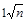 |
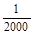 (в трудных условиях
пересеченной и горной местности 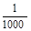 |
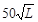 |
|
Полевое трассирование (вынос трассы в натуру) новых железных и автомобильных дорог |
|
(в трудных условиях пересеченной и горной местности ) |
|
|
Проложение ходов съемочной геодезической сети при изысканиях на действующих дорогах: |
|||
|
базисные и съемочные ходы на железнодорожных станциях, магистральные ходы на перегонах на застроенной территории |
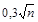 |
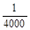 |
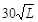 |
|
съемочные ходы на железнодорожных станциях вне путевого развития, базисные ходы на разъездах, магистральные ходы на перегонах и автомобильных дорогах |
|
|
|
|
Измерение длин при разбивке пикетажа (двойной промер мерной лентой) |
- |
|
- |
Примечание. L - длина хода, n - число углов хода.
3.10. Измерения углов и расстояний в ходах съемочного обоснования должны производиться, как правило, электронными и электрооптическими тахеометрами или теодолитами типа 2Т2, 2Т5 с установленными на их колонки светодальномерами по трехштативной системе.
3.11. При прокладке магистральных и съемочных ходов, а также при полевом трассировании допускается как исключение, при обосновании в программе изысканий, измерение углов теодолитами 2Т30 и измерение длин линий стальными мерными лентами или рулетками. При этом должно быть обеспечено выполнение требований СНиП 1.02.07-87.
Максимальная длина сторон базисного, магистрального и съемочного ходов должна устанавливаться в программе изысканий в зависимости от назначения хода и используемого светодальномера.
В ходах привязки к пунктам государственной геодезической сети и ходах планово-высотного обоснования маршрутной аэрофотосъемки максимальная длина стороны хода определяется условиями привязки и возможностями используемого светодальномера.
При выполнении работ электронными и электрооптическими тахеометрами или светодальномерами допускается использовать висячие ходы с одной стороной длиной не более 750 м. Измерения углов и стороны висячего хода должны соответствовать требованиям пп. 3.13 и 3.14.
В качестве визирных целей при измерениях горизонтальных и вертикальных углов следует использовать, как правило, отражатели светодальномера, установленные на штативе.
Измерение горизонтальных углов в базисных и съемочных (в пределах путевого развития) ходах на железнодорожных станциях тахеометрами следует выполнять двумя круговыми приемами.
Расхождения между двумя измерениями одной и той же линии не должны превышать 3ms, где ms - средняя квадратическая погрешность измерения линии данным типом светодальномера.
3.15. При обработке результатов линейных измерений в измеренные расстояния должны быть введены поправки за наклон линии, а также за температуру и давление воздуха, которые следует измерять в начале, середине и конце каждого рабочего дня.
3.16. Измерения в ходах привязки к пунктам государственной геодезической сети должны выполняться так же, как и при прокладке магистральных ходов.
Для угловой привязки на пунктах государственной геодезической сети необходимо измерять два примычных угла на геодезические знаки, дирекционные углы направлений на которые известны, или на ориентирные пункты.
Разность измеренных примычных углов на исходные пункты не должна отличаться от разности исходных дирекционных углов больше чем на 30².
3.17. Пункты (точки) магистральных ходов при инженерно-геодезических изысканиях новых железных и автомобильных дорог закрепляются на местности временными знаками - деревянными кольями диаметром около 10 см или столбами, в которые вбиты гвозди, фиксирующие центр знака. При работах в залесенной и таежной местностях в качестве знаков могут быть использованы пни спиленных деревьев диаметром не менее 20 см.
3.19. При съемке железнодорожных станций постоянными знаками (рекомендуемое приложение 1) должны быть закреплены не менее 3 точек базисного хода на каждый парк и не менее 2 точек на 1 км главного пути.
Положение постоянных знаков выбирают так, чтобы обеспечить их сохранность при реконструкции станции, а при их закладке не были повреждены подземные коммуникации. На каждый постоянный знак должен быть составлен абрис с указанием не менее трех расстояний до ближайших сооружений или устройств, которые легко могут быть опознаны. Все постоянные знаки геодезической основы станции должны быть переданы по акту на хранение дистанции пути.
3.20. Отметки точек магистральных, базисных и съемочных ходов, опознаков планово-высотного обоснования аэрофотосъемки и головки рельса существующих железных дорог допускается определять методами геометрического или тригонометрического нивелирования.
Выбор метода нивелирования определяется имеющимся парком геодезических приборов и условиями производства работ.
Тригонометрическое нивелирование следует применять, как правило, при производстве работ с использованием светодальномеров или электронных и электрооптических тахеометров.
3.21. Геометрическое нивелирование надлежит выполнять, как правило, путем прокладки по точкам съемочного обоснования ходов технического нивелирования, которые привязывают к пунктам государственной геодезической сети, маркам и реперам нивелирной сети и к временным реперам.
Для составления продольного профиля существующего железнодорожного пути нужно нивелировать: на прямых участках головки одного (правого или левого) рельса, на кривых - внутреннего рельса.
На кривых, направленных в разные стороны, переход с внутреннего рельса одной кривой на внутренний рельс другой должен производиться на середине прямой вставки.
Для составления продольного профиля существующей автомобильной дороги нивелирный ход следует прокладывать по обочине.
3.22. Невязки в нивелирных ходах не должны превышать величин, приведенных в табл. 3.
При привязке к пунктам государственной геодезической
сети, маркам и реперам в случаях, когда местность имеет большие углы наклона и
число станций на 1 км хода более 25, допустимую невязку следует подсчитывать по
формуле 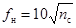
3.23. Для производства технического нивелирования следует использовать нивелиры с увеличением труб не менее 20* и ценой деления цилиндрического уровня не более 45² на 2 мм или нивелира с компенсатором.
Для определения высот точек базисных ходов, прокладываемых на железнодорожных станциях, надлежит применять нивелиры с увеличением трубы 25* и ценой деления цилиндрического уровня не более 25² на 2 мм. При проложении нивелирных ходов должны соблюдаться требования СНиП 1.02.07-87.
3.24. Для определения длин линий при тригонометрическом нивелировании следует использовать светодальномеры, электронные и электрооптические тахеометры, которые обеспечивают среднюю квадратическую погрешность измерения расстояния не более ±2 см.
Для измерения вертикальных углов нужно использовать теодолиты типа 2Т2 и 2Т5 или равноточные им электронные и электрооптические тахеометры.
Рекомендуется использовать теодолиты с компенсаторами места нуля вертикального круга.
При использовании теодолитов типа 2Т5 (или равноценных им электролитических и электронных тахеометров) вертикальные углы следует измерять двумя приемами или одним приемом методом трех нитей.
3.26. При тригонометрическом нивелировании точек ходов съемочной геодезической сети вертикальные углы следует измерять в прямом и обратном направлениях.
Разрыв во времени между измерениями «прямо» и «обратно» не должен превышать 1 ч.
Контролем измерений вертикального угла в поле служат вычисленные значения места нуля (места зенита), которые не должны отличаться от средних .значений за день более чем на 6².
3.28. Вычисление превышений рекомендуется выполнять в поле: при производстве тригонометрического нивелирования электронными и электрооптическими тахеометрами - с помощью микропроцессора, встроенного в прибор, при использовании светодальномеров, установленных как насадка на колонки теодолита - с помощью микрокалькулятора.
3.29. Проект планово-высотного обоснования маршрутной аэрофотосъемки следует составлять с учетом назначения топографических планов, их масштаба и типа стереофотограмметрических приборов, используемых при обработке аэрофотоснимков.
Рекомендуемые схемы расположения планово-высотных опознаков для обоснования маршрутов аэрофотосъемки приведены на рис. 1.
Рис. 1. Схема расположения опознаков для обоснования маршрутов аэрофотосъемки при изысканиях:
а - новых линий; б - вторых путей; в - для усиления и реконструкции больших станций и узлов; 1 - планово-высотные опознаки; 2 - высотные опознаки; 3 - трасса; 4 - магистральный ход; 5 - точки на земляном полотне, привязанные к пикетажу; 6 - контрольные точки; 7 - границы рабочей площади
Требования к частоте расположения планово-высотных опознаков приведены в табл. 4.
Таблица 4
|
Масштаб фотографирования |
Расстояния между опознаками |
||||
|
в базисах фотографирования |
в метрах |
||||
|
вдоль оси маршрута |
поперек оси маршрута |
вдоль оси маршрута |
поперек оси маршрута |
||
|
Выбор направления, эталонные участки, крупные железнодорожные узлы |
|||||
|
1:5000 |
1:8000 - 1:15000 |
4 - 8 |
0,7 - 0,8 |
2000 - 6000 |
300 - 800 |
|
Составление проекта (рабочего проекта) и рабочей документации: |
|||||
|
для новых железных и автомобильных дорог |
|||||
|
1:2000 |
1:4000 - 1:8000 |
3 - 6 |
0,4 - 1,0 |
600 - 2000 |
100 - 400 |
|
1:1000 |
1:3000 - 1:5000 |
3 - 6 |
0,4 - 1,0 |
550 - 1500 |
100 - 350 |
|
1:500 |
1:1500 - 1:3000 |
1 - 3 |
0,6 - 1,0 |
120 - 350 |
60 - 150 |
|
для перегонов и промежуточных станций |
|||||
|
1:2000 |
1:4000 - 1:8000 |
4 - 8 |
0,4 - 0,6 |
800 - 3000 |
100 - 250 |
|
1:1000 |
1:3000 - 1:5000 |
4 - 8 |
0,4 - 0,6 |
800 - 2500 |
100 - 180 |
|
1:500 |
1:1500 - 1:3000 |
1 - 2 |
0,6 - 0,8 |
100 - 280 |
60 - 80 |
|
для узловых и участковых станций |
|||||
|
1:2000 |
1:4000 - 1:8000 |
2 - 3 |
0,6 - 0,8 |
400 - 1000 |
120 - 350 |
|
1:1000 |
1:3000 - 1:5000 |
2 - 3 |
0,6 - 0,8 |
400 - 840 |
120 - 250 |
|
1:500 |
1:1500 - 1:3000 |
1 - 2 |
0,6 - 0,8 |
100 - 280 |
60 - 80 |
На стыках аэрофотосъемочных маршрутов следует намечать не менее двух планово-высотных опознаков, располагая их симметрично к линии базисов.
Если аэрофотосъемка выполнялась по криволинейным маршрутам, а также для составления топографических планов масштаба 1:500 горловин железнодорожных станций, площадок под искусственные сооружения и т.п., должна быть выполнена сплошная привязка аэрофотоснимков (четыре точки, расположенные по углам стереопары, и одна контрольная точка).
3.30. Зоны расположения опознаков намечают на контактных отпечатках с учетом принятой схемы планово-высотного обоснования и возможного выбора четких контуров. В каждой зоне тройного перекрытия должны быть намечены 2 - 3 хорошо видимых и четко отобразившихся на аэрофотоснимке контура или детали сооружения, которые могут быть использованы при фотограмметрическом сгущении опорной сети. Дополнительно в пределах каждой стереопары следует наметить 2 - 3 контрольные точки, четко изобразившиеся на аэрофотоснимке.
3.31. Планово-высотные опознаки следует выбирать в зоне тройного перекрытия, контрольные точки - равномерно по площади стереопары.
Опознаки и контрольные точки должны быть расположены на горизонтальных площадках.
3.32. Положение опознаков и контрольных точек уточняют под стереоскопом на аэрофотоснимках и переносят на репродукции накидного монтажа.
Если пункты государственной геодезической сети не попадают на репродукции накидного монтажа, на полях указывают направления на эти пункты и расстояние до них.
В зависимости от принятой организации полевых и аэрофотосъемочных работ опознаками могут служить специально выбранные на имеющихся топографических планах (картах) или фотосхемах, составленных по материалам залетов предыдущих лет, и замаркированные на местности точки, расположенные в пределах снимаемой полосы.
В этом случае проект планово-высотного обоснования следует составлять в виде схемы для заданного масштаба фотографирования, принимая величину базиса фотографирования «в» равной 65 мм в масштабе аэрофотосъемки, а аэрофотосъемку выполнять с 90 %-ным продольным перекрытием.
3.33. Маркировку надлежит производить перед аэрофотосъемкой с минимальным разрывом во времени. Маркируемые опознаки следует располагать так, чтобы на аэрофотоснимках их изображения не закрывались изображениями других предметов или их тенями. Материал и размеры маркировочных знаков должны удовлетворять требованиям СНиП 1.02.07-87.
3.34. На застроенных участках и станционных площадках в качестве опознаков следует использовать хорошо видимые предметы и детали сооружений. В случае необходимости они должны быть подкрашены краской для создания контрастности. При производстве инженерно-геодезических изысканий для проектирования вторых путей следует производить подкраску оснований путевых знаков.
3.35. Запрещается маркировка в лесу путем вырубки площадок. При разрешении лесхозов допускается маркировка расчисткой старых вырубок или лесных полян в форме квадратов со строгим соблюдением правил порубок.
3.36. Предметы и контуры местности, используемые в качестве планово-высотных опознаков должны быть определены на местности с погрешностью, не превышающей 0,2 мм в масштабе аэрофотоснимка.
Опознанный пункт планово-высотного обоснования должен быть оформлен на лицевой стороне аэрофотоснимка (обведен кружком диаметром 10 мм с центром (без накола) в опознанной точке, рядом должен быть номер или название точки). Если рядом с опознанным пунктом изобразились детали, которые могут затруднить идентификацию точки, то на обратной стороне аэрофотоснимка должен быть составлен абрис.
Если в качестве опознака была выбрана точка контура, то она должна быть наколота тонкой иглой. С лицевой стороны аэрофотоснимка ее обводят пунктиром, а на обратной стороне составляют абрис и дают описание точки.
3.37. Высотные опознаки обозначают на аэрофотоснимке наколом, обведенным на лицевой стороне кружком, номером и отметкой. На обратной стороне аэрофотоснимка накол обводят кружком, нумеруют и дают краткое описание опознака с указанием его положения относительно ближайших микроформ рельефа. Описание следует сопровождать абрисом или профилем местности.
3.38. Координаты опознаков и контрольных точек следует определять с точек магистрального хода полярным способом или включать их в замкнутые ходы.
Магистральный ход должен прокладываться, как правило, вблизи камерально запроектированной трассы дороги или существующего железнодорожного пути. В залесенных районах магистральный ход и ходы привязки опознаков необходимо прокладывать с минимальной рубкой.
3.39. Часть точек магистрального хода следует опознавать и надежно закреплять на местности с тем, чтобы использовать их в качестве высотных опознаков и контрольных точек при фотограмметрической обработке материалов аэрофотосъемки и в последующем в качестве геодезической основы при полевом трассировании (выносе трассы в натуру).
3.40. Топографические съемки выполняются с целью составления инженерно-топографических планов, служащих основой для проектирования строительства новых железных и автомобильных дорог, вторых путей, реконструкции существующих железных дорог и железнодорожных станций и узлов, а также получения аналитических данных и создания ЦММ.
Масштабы топографических съемок и высоты сечения рельефа следует назначать в соответствии с требованиями п. 2.14.
3.41. Инженерно-топографические планы для трассирования и проектирования железных и автомобильных дорог должны составляться, как правило, аэрофототопографическим методом по материалам аэрофотосъемки.
Наземную съемку как основной вид съемки следует применять в случаях, когда выполнение аэрофотосъемки невозможно или экономически нецелесообразно в связи с ограниченностью снимаемой территории.
При аэрофототопографической съемке железнодорожных станций и перегонов наземные съемки выполняют на участках предполагаемой реконструкции путевого развития для получения аналитических данных и создания ЦММ.
Точность инженерно-топографических планов должна отвечать требованиям СНиП 1.02.07-87.
3.42. Основным видом наземной топографической съемки при инженерно-геодезических изысканиях новых железных и автомобильных дорог и вторых путей служит тахеометрическая съемка.
Тахеометрическую съемку следует выполнять электронными и электрооптическими, авторедукционными и номограммными тахеометрами.
Можно использовать картографические столики, соединяющиеся механическими приспособлениями с геодезическими приборами.
3.43. Тахеометрическую съемку следует выполнять, как правило, с пунктов (точек) съемочного обоснования.
При производстве тахеометрической съемки должны соблюдаться требования, установленные СНиП 1.02.07-87.
3.44. Выполнение полевых работ при тахеометрической съемке следует сочетать с камеральной обработкой материалов съемки, при этом должны быть выполнены:
проверка полевых журналов и составление подробной схемы съемочной геодезической сети;
вычисление координат и высот точек магистральных ходов;
вычисление в полевых журналах высот всех пикетов на станциях;
накладка точек магистральных ходов, пикетных точек, проведение горизонталей и нанесение ситуации.
3.45. Съемку элементов станционной ситуации на существующих железнодорожных станциях следует выполнять способами прямоугольных координат (ординатами от ходов съемочной геодезической сети), полярных координат и угловой засечки.
Одновременно со съемкой станционной ситуации должны быть определены координаты: основных элементов путевого развития, углов пассажирского здания, локомотивного и вагонного депо, постов централизации, а также расположенных между путями или в непосредственной близости к ним служебных и технических зданий, наружных граней опор искусственных сооружений, прожекторных мачт и опор высоковольтных линий передач, высоких и низких платформ.
Точность съемки определяется масштабом составляемого инженерно-топографического плана.
Погрешности определения координат элементов станционной ситуации и путевого развития не зависят от масштаба составляемого инженерно-топографического плана и не должны превышать: вдоль путей 6 см, поперек путей 2 см.
Масштаб и способы съемки и координирования элементов станционной ситуации следует устанавливать в программе изысканий в зависимости от требований проектирования, условий производства работ и имеющегося парка геодезических приборов.
3.46. При съемке способом ординат металлическую ленту (рулетку) укладывают по линии базисного или съемочного хода между створными точками, которые намечают через 50 м. Вешение линии для определения положения створных точек должно производиться теодолитом.
Расстояние по ходу следует отсчитывать с точностью 1 см по тщательно уложенной в створе компарированной мерной ленте (рулетке). Длина стороны хода, полученная в процессе съемки, не должна отличаться от измеренной при прокладке оазисного (съемочного) хода более чем на 1/2000.
Ординаты из определяемых точек опускают на ход с помощью эккера (желательно с жестким отвесом). Ординаты измеряют компарированной мерной лентой, а при работе на станциях, оборудованных автоблокировкой и электрической централизацией, - изолированной или тесмяной рулеткой. Тесмяную рулетку следует каждый день сравнивать с компарированной мерной лентой.
Длина ординаты не должна превышать длины мерного прибора.
3.47. Для съемки методом полярных координат следует использовать электрооптические и электронные тахеометры, светодальномеры, установленные как насадка на теодолит, а также внутрибазисные тахеометры и оптические дальномеры, обеспечивающие измерение расстояний с предельной погрешностью не более 1/1000.
Съемку оптическими дальномерами следует выполнять в полосе шириной до 20 м в каждую сторону от съемочного хода. Расстояние между точками съемочного хода не должно превышать 100 м, а расстояние до определяемых точек - 60 м.
При съемке с использованием электрооптических и электронных тахеометров и светодальномеров расстояния до определяемых точек не должны превышать величин, приведенных в СНиП 1.02.07-87.
Расстояние до определяемой точки и горизонтальный угол следует измерять одним полуприемом. Визирование производят на отражатель, закрепленный на раздвижной вехе. Одновременно со съемкой (координированием) должно выполняться тригонометрическое нивелирование в соответствии с требованиями п. 3.27.
3.48. Способ угловой засечки следует применять при съемке элементов ситуации, удаленных от ходов съемочной геодезической сети на расстояние от 20 до 80 м.
При съемке способом угловой засечки в качестве базиса засечки следует использовать прямую, соединяющую две ближайшие к снимаемому участку точки съемочного обоснования.
Базис засечки можно располагать как вдоль, так и поперек путей. Поперечный базис должен пересекать пути под углом, близким к прямому.
Положение базиса засечки следует выбирать в зависимости от условий съемки. Длина базиса засечки не должна превышать 200 м. Угол засечки на определяемые точки не должен быть менее 30° и более 150°.
Углы между базисом засечки и направлениями на определяемые точки определяют так же, как и в базисных ходах (п. 3.13).
Визирование выполняют на шпильку или марку, установленную над точкой базиса на штативе.
3.49. Перед координированием центров стрелочных переводов производят обмер стрелочных переводов с разбивкой их центров. Затем устанавливают границы участков, в пределах которых координирование выполняют с тех или иных точек (сторон) ходов съемочной геодезической сети.
Для каждого стрелочного перевода определяют марку крестовины и записывают его номер, сторонность перевода, тип рельсов, род балласта, способ управления и освещения и основные размеры.
Стрелочные переводы и глухие пересечения в случаях, специально оговоренных в техническом задании, нужно обмерять в следующем порядке:
определяют марку крестовины;
измеряют расстояния от хвоста крестовины до центра перевода, до начала остряков и до стыков рамных рельсов.
Перекрестный стрелочный перевод должен обмеряться по обоим прямым направлениям.
Отсчеты по ленте (рулетке) должны производиться с точностью 1 см.
3.50. Центр стрелочного перевода (глухого пересечения) заводского изготовления (с литым сердечником крестовины), расположенного на прямом пути, следует определять, откладывая по направлению прямого пути соответствующее эпюре стрелочного перевода расстояние от хвоста крестовины до перевода.
При определении центров стрелочных переводов можно применять другие способы и специальные приспособления.
3.52. Центр стрелочного перевода, расположенного на кривой, следует определять вешением основного и отклоненного пути, на которых устанавливают шпильки.
За исходные направления принимают рамные рельсы и рабочие грани крестовины.
В пределах крестовины шпильки устанавливают в ее концах на оси отклоненного пути.
Допускается определение центра стрелочного перевода по эпюре.
3.53. При съемке производственных, служебно-технических, жилых и других зданий и сооружений они должны быть обмерены по наружному периметру и по каждому указано характеристика, наименование, материал стен, фундамента и кровли, состояние и принадлежность.
Для зданий и сооружений, находящихся в пределах путевого развития или непосредственной близости к путям, следует определить координаты не менее двух углов, ближайших к ходам геодезической съемочной сети.
При съемке зданий, имеющих вводы железнодорожных путей (локомотивные и вагонные депо и т.п.), дополнительно должны быть закоординированы точки пересечения всех путей, проходящих внутрь здания, с наружной гранью стены и замерены расстояния между осями путей внутри здания.
3.54. Одновременно со съемкой путевой ситуации следует производить съемку воздушных линий электропередач, осветительной сети, связи, желобов и тяг СЦБ и т.п.
Требования к съемке пересечений существующих путей с линиями электропередач и связи изложены в пп. 3.157 - 3.160.
3.55. Геометрию станционных путей (прямые вставки, кривые, изломы) следует определять по координатам точек на осях путей, а также характерных точек стрелочных переводов (п. 3.51).
Точки на оси пути должны располагаться, как правило, при масштабе съемки 1:2000 - через 80 м, 1:1000 - через 40 м, 1:500 - через 20 м.
Необходимость определения элементов кривых должна быть определена в программе изысканий.
3.56. При аэрофототопографической съемке железнодорожных станций наземные топографо-геодезические работы) по определению координат элементов станционной ситуации должны производиться так же, как и при наземной топографической съемке.
При обосновании в программе изысканий и согласовании с главным инженером проекта на участках, где не предусматривается реконструкция путевого развития, координирование элементов станционной ситуации может выполняться фотограмметрическим методом.
3.57. Аэрофотосъемку следует выполнять в соответствии с «Основными положениями по аэрофотосъемке, выполняемой для создания и обновления топографических карт и планов (ГКИНП-09-32-80)» ГУГК СССР и Министерства гражданской авиации (МГА СССР), а также с требованиями настоящих Норм.
3.58. Аэрофотосъемочные работы надлежит производить в соответствии с техническим заданием, составленным руководителями отдела, выполняющего аэрофототопографическую съемку.
В техническом задании должны быть указаны:
район работ и календарные сроки производства аэрофотосъемки и сдачи продукции;
масштабы фотографирования и создаваемых топопланов;
тип и фокусное расстояние аэрофотоаппарата (АФА);
продольное и поперечное перекрытия аэрофотоснимков;
тип носителя и необходимость применения статоскопа и радиовысотомера;
состояние местности и лиственного покрова;
необходимость установки дополнительных АФА и другой аппаратуры (гидроустановка, воздушная помпа и др.);
часы производства аэросъемочных работ, возможность съемки при наличии сплошной облачности среднего и верхнего яруса;
используемый картографический материал для прокладки маршрутов (карты, схемы, продольные профили);
повторность аэрофотосъемки;
специальные требования к аэрофотосъемке.
3.59. На борту носителя, предназначенного для производства плановой аэрофотосъемки, должна быть установлена следующая аппаратура:
топографический АФА в плановой аэроустановке с автоматическим разворотом на углы сноса;
электронный командный прибор ЭКП-2м с оптическим блоком;
абонентный аппарат переговорного устройства (СПУ-10);
вспомогательная аппаратура (бортвизиры, аэроэкспонометр АЭ-2 и др.).
На самолетах при высоте фотографирования более 500 м при необходимости устанавливают статоскоп и радиовысотомер с фоторегистратором.
При выполнении аэрофотосъемки по криволинейным маршрутам следует использовать гидроустановку ГУТ-3.
Оборудование носителей аэрофотосъемочной и другой аппаратурой следует выполнять в порядке, установленном МГА СССР.
3.60. Воздушное фотографирование для составления инженерно-топографических планов при инженерно-геодезических изысканиях новых железных и автомобильных дорог и вторых путей следует выполнять АФА типа ТЭС-10М, ТЭ-140М, ТЭ-200М.
Для аэрофотосъемки железнодорожных станций рекомендуется использовать АФА-ТК 10/18, позволяющий компенсировать сдвиг изображения в момент экспонирования.
3.61. АФА после рабочего сезона должны проходить профилактический ремонт. Раз в два года определяют и заносят в паспорт значения элементов внутреннего ориентирования, фотограмметрической дисторсии объектива, клинообразности светофильтров и скорости работы затвора.
Поверхность выравнивающего стола у АФА не должна отклоняться от плоскости более чем на 10 мкм. Смещение главной точки от истинного положения не должно превышать 0,1 мм.
Фотограмметрическая дисторсия объектива должна дополнительно определяться каждый раз в случае разъема компонентов объектива.
3.62. Масштабы фотографирования при аэрофототопографической съемке выбирают в соответствии с требованиями СНиП 1.02.07-87.
При использовании АФА ТЭС-10М масштаб фотографирования может быть уменьшен на 30 %.
3.63. При инженерно-геодезических изысканиях железных и автомобильных дорог выполняют, как правило, одномаршрутную аэрофотосъемку, так чтобы трасса проектируемой дороги или ось существующего железнодорожного пути располагались в центральной части аэрофотоснимков.
Двух- и многомаршрутную съемку (длина маршрута не менее 5 км) выполняют на участках новых железных и автомобильных и существующих железных дорог с большим числом углов поворота трассы, на мостовых переходах и при съемке больших железнодорожных узлов и станций.
3.64. При выполнении аэрофотосъемки с вертолета МИ-8, оборудованного гидроустановкой ГУТ-3, автоматической плановой установкой и электронным командным прибором ЭКП-2м, для проектирования вторых путей, а также новых автомобильных дорог, в случае использования аналитических методов сгущения опорных сетей, допускается прокладка криволинейных маршрутов. При этом общие углы поворота трассы не должны превышать 30°, а углы разворота вертолета между экспозициями АФА - 4°. Аэрофотосъемку в этом случае ведут в непрерывном полуавтоматическом режиме.
Трасса во всех случаях съемки должна находиться вблизи оси маршрута. Проектирование маршрутов и определение углов поворота трассы производят по планам масштаба 1:10000, а при их отсутствии - составляют схематический план по материалам продольного профиля.
3.65. Аэрофотосъемочные маршруты следует прокладывать визуально по наземным ориентирам, отмеченным на картах, планах или фотосхемах, составленных по материалам аэрофотосъемки предыдущих лет.
При аэрофотосъемке существующих железных дорог основными ориентирами служат:
для станций - оси главных путей и находящиеся около них станционные сооружения;
для перегонов - ось пути (видимая железнодорожная колея).
При аэрофотосъемке в горных и всхолмленных районах продольное перекрытие определяют по табл. 5 в зависимости от заданного продольного перекрытия, высоты полета над средней плоскостью аэрофотосъемочного маршрута H и наибольшего превышения точек местности над средней плоскостью h.
Таблица 5
|
заданное |
минимальное |
максимальное |
|
|
h / H < 0,2 |
h / H = 0,2 - 0,3 |
||
|
60 |
56 |
66 |
70 |
|
80 |
78 |
83 |
85 |
|
90 |
89 |
92 |
93 |
При одномаршрутной аэрофотосъемке маршруты на стыках должны перекрываться не менее чем на 2 базиса фотографирования.
3.67. Поперечное перекрытие в случае использования двух- и трехмаршрутной аэрофотосъемки принимают по табл. 6.
Таблица 6
|
Поперечное перекрытии, % |
|||
|
заданное |
минимальное |
максимальное от расчетного |
|
|
Крупнее 1:10000 |
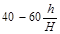 |
20 |
+20 |
|
1:10000 и мельче |
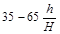 |
20 |
+15 |
3.68. Превышения рельефа местности, технических и служебных зданий на станциях и перегонах, за исключением мачт станционного прожекторного освещения и радиорелейной связи, не должны превышать 1/4 от высоты фотографирования на станциях и 1/3 на перегонах. Высотные сооружения на станциях должны быть заблаговременно нанесены на схему маршрутов с тем, чтобы не ограничивать пилотирование носителей и обеспечить безопасность производства работ. Высота полета не должна отличаться от заданной при высоте полета до 500 м - на 20 м в равнинных и на 25 м в горных районах, а при высоте полета 600 - 1200 м - соответственно на 20 и 30 м.
3.69. Углы наклона аэрофотоснимков, полученные стабилизированными АФА, не должны превышать значений, приведенных в табл. 7.
Таблица 7
|
Максимальные углы наклона, град |
||
|
fk ≤ 140 мм |
fk ≥ 200 мм |
|
|
Взаимные продольные и поперечные углы наклона |
1,5 |
2,0 |
|
Сумма взаимных поперечных углов наклона из серии аэрофотоснимков |
2,0 |
2,5 |
На съемочном маршруте количество снимков с максимальным значением взаимных продольных углов не должно быть более 3 %, а взаимных поперечных углов наклона - не более 5 % числа аэрофотоснимков. При аэрофотосъемке без стабилизации АФА углы наклона не должны превышать 3°, количество таких снимков на маршруте не должно превышать 10 %.
3.70. Непараллельность базиса фотографирования стороне снимка («елочка») не должна превышать 5°.
Отклонение осей маршрутов от заданного положения не должно превышать на снимках: 0,8 см - при аэрофотосъемке в масштабе 1:5000 и крупнее и 1,0 см - при масштабах 1:8000 - 1:15000. При аэрофотосъемке перегонов криволинейными маршрутами границы обработки на снимках не должны подходить к краям ближе чем на 2 см.
3.71. Аэрофотосъемка должна производиться, как правило, при отсутствии кучевой облачности. Высота Солнца при фотографировании на черно-белую пленку должна быть не менее 20° над горизонтом, для цветной и спектрозональной пленки - 25°.
Допускается при необходимости выполнение аэрофотосъемки при сплошной облачности с определением экспозиции по экспонометру.
Для определения экспозиции следует использовать аэроэкспонометр АЭ-2.
Все параметры съемки и их изменение в процессе работ штурман и бортоператор указывают в справке для фотолаборатории и справке для фотограммгруппы (рекомендуемые приложения 2 и 3).
3.72. Оценка результатов залета и фотохимической обработки производится по негативам и накидному монтажу. Все негативы тщательно просматриваются на просмотровом столе. На негативах не должно быть дефектов, снижающих точность измерений и дешифрирования: изображения облаков и теней от них, царапин, заломов, сплывов эмульсии, бликов, пятен ореолов, следов от разрядов статического электричества, накладок и др. Продольное и поперечное перекрытие снимков, углы наклона, непараллельность базисов фотографирования сторонам снимка и отклонение осей маршрутов от заданного положения должно соответствовать величинам, приведенным в пп. 3.66, 3.67, 3.69, 3.70.
3.73. Для накидного монтажа используют: при продольном перекрытии 60 % - все снимки, при перекрытии 80 % - четные или нечетные снимки, при перекрытии 90 % - каждый третий снимок. Контуры совмещают вблизи главных точек снимков. На репродукциях накидного монтажа должны быть указаны: паспортные данные АФА, качество залета, дата съемки, масштаб фотографирования и масштаб репродукции.
Масштаб репродукции должен быть в 3 - 4 раза мельче масштаба фотографирования.
3.74. Невыравнивание аэропленки в плоскость в моменты, соответствующие экспозициям для АФА с вакуумным выравниванием, определяют по нерезкости изображения при наблюдении пары снимков под стереоскопом при нулевом стереоэффекте. Если невыравнивание пленки обнаружено, залет бракуется. АФА в этом случае должен быть тщательно проверен или заменен новым. Для АФА, у которых пленка прижимается к выравнивающему стеклу с нанесенными на нем крестами, контроль выравнивания пленки определяете аналогично. В камеральных условиях выравнивание пленки в плоскость может быть определено на стереокомпараторе монокулярно по искажению крестов и отклонению их от направления осей X-X и Y-Y. Проверка делается для каждого пятого снимка.
3.75. Приемке подлежат только завершенные съемкой участки, для каждого из которых дана оценка качества. Обнаруженные недоделки или забракованные материалу должны быть переделаны. Повторные залеты должны обеспечивать перекрытие с предыдущими залетами на два базиса фотографирования с каждой стороны маршрута.
3.76. При приемке материалов должны быть проверены соответствие положения фактически выполненных маршрутов проекту и обеспеченность заданных границ съемочных участков;
соблюдение продольного и поперечного перекрытия снимков;
углы наклона аэрофотоснимков;
высота полета и колебания ее на маршруте;
параллельность базисов фотографирования сторонам снимка;
прямолинейность маршрутов;
наличие и качество показаний статоскопа и радиовысотомера;
фотограмметрическое качество аэрофотосъемочных материалов;
фотографическое качество аэрофильмов и контактных отпечатков;
качество негативов и репродукций накидного монтажа;
комплектность материалов, общее качество продукции, полнота и правильность составления и заполнения документации;
дополнительная документация, предусмотренная договором.
3.77. Полезную площадь съемки S, км2, следует определять по формулам;
для одномаршрутной аэрофотосъемки
S = 1,26 m Lм · 10-4,
для двух- и трехмаршрутной аэрофотосъемки
S = a m Lм · 10-5,
где a - ширина заснятого участка, см;
m - знаменатель масштаба аэрофотосъемки;
Lм - длина аэрофотосъемочного маршрута, км.
3.78. Каждый аэрофотосъемочный участок получает оценку «хорошо», если:
соблюдены все допуски на производство аэрофотосъемочных работ, установленные соответствующими действующими нормативно-техническими документами;
не менее 85 % аэронегативов съемочного участка имеют по фотографическому качеству оценку «хорошо»;
отсутствуют перезалеты, связанные с покрытием разрывов.
3.79. После окончания работ и установленного соответствующими инструкциями просмотра материалов начальник аэрофотосъемочной партии должен передать заказчику следующие материалы:
аэронегативы;
контактную печать в двух экземплярах;
увеличенные отпечатки (по отдельному заданию);
негативы репродукций накидного монтажа в одном экземпляре;
репродукции накидного монтажа в двух экземплярах;
топографические карты (фотосхемы) с проектом заданных и фактических осей маршрутов аэрофотосъемки;
пленки регистрации показаний спецприборов (радиовысотомера и др.);
паспорта аэрофотосъемочных участков;
контрольные негативы (на стекле) прикладной рамки аэрофотоаппарата;
выписки из формуляров аэрофотоаппаратов и специальных приборов;
журналы регистрации аэронегативов и негативов репродукций накидных монтажей;
справки фотолаборатории;
другие материалы, предусмотренные договором.
Журналы учета и регистрации фотоматериалов сдаются в спецотдел организации, производящей аэрофотосъемочные работы после соответствующего контроля передаются заказчику.
Формы журналов и актов приведены в рекомендуемых приложениях 4 - 10.
При выполнении аэрофотосъемочных работ подразделениями МГА СССР документация оформляется в соответствии с требованиями, принятыми в МГА СССР. Дополнительная продукция должна предусматриваться договором.
3.80. При инженерно-геодезических изысканиях новых железных и автомобильных дорог дешифрирование аэрофотоснимков следует выполнять в соответствии с требованиями СНиП 1.02.07-87.
3.81. Камеральное дешифрирование аэрофотоснимков перегонов и железнодорожных станций следует производить при масштабах аэрофотографирования 1:5000 и крупнее.
Полевое дешифрирование следует выполнять на снимках или фотосхемах, увеличенных до масштаба, близкого к масштабу составляемого плана, и отпечатанных на матовой фотобумаге.
Контуры, частично или полностью не изобразившиеся на аэрофотоснимках (из-за малых размеров или чем-либо закрытые), снимают наземными методами.
3.82. Дешифрирование элементов станционной ситуации крупных железнодорожных станций во избежание пропусков следует выполнять в следующем порядке: камеральное дешифрирование с последующим натурным обследованием всех элементов земляного полотна, путевого развития, стрелок, сигналов, зданий и других обустройств, искусственных сооружений, воздушных сетей и подземных коммуникаций.
Перед дешифрированием необходимо получить один экземпляр схемы к ТРА или снять с нее кальку и уточнить нумерацию путей, стрелочных переводов и сигналов. Кроме того, нужно сделать необходимые выписки из ТРА.
3.83. Элементы земляного полотна (насыпи и выемки, бермы, резервы, банкеты, кавальеры и другие искусственные образования рельефа) дешифрируют камерально (используя стереоскоп, интерпретоскоп) с последующим натурным обследованием и закреплением результатов дешифрирования условными знаками на аэрофотоснимках.
3.84. Путевое развитие дешифрируют, показывая номер каждого пути согласно схеме к ТРА станции. Главные пути обозначают римскими цифрами, прочие - арабскими.
Оси путей в местах плохого фотоизображения рельсовых нитей «поднимают» чернилами.
Станционные пути в соответствии с ТРА объединяют в парки: приемный, отправочный, приемо-отправочный, транзитный, сортировочный и т.п.
3.85. Отдешифрированные стрелочные переводы изображают штрихом от оси пути в сторону переводного механизма. Около штриха подписывают номер стрелки, который указан в натуре. Одновременно опознают предельный столбик, закрепляют его на аэрофотоснимке точкой и надписью «П. С.».
3.86. Сигналы, путевые знаки и другие устройства и сооружения службы пути, СЦБ и связи после дешифрирования отображают на аэрофотоснимке соответствующими условными знаками с необходимыми пояснениями.
3.87. При дешифрировании переездов наносят на аэрофотоснимки их оси с подписью «охраняемый» или «неохраняемый» и пикетажное значение. Кроме того, показывают протяжение настила, тип шлагбаума (автоматический или неавтоматический), габаритные ворота и материал покрытия переезда.
3.88. Для пассажирского здания показывают ось, над которой надписывают «ось ПЗ» и ее пикетажное значение.
Пассажирское здание и здания сложных очертаний (депо и др.) обмеряют по наружному контуру с составлением абриса. Здания, закрытые кроной деревьев или с перспективным изображением, обмеряют по наружному контуру и привязывают промерами к видимым предметам с составлением абриса.
Остальные здания при дешифрировании не оконтуривают, а нумеруют. Нумерация зданий ведется по часовой стрелке от пассажирского здания, которому присваивается № 1. Здания, расположенные за полосой отвода, не нумеруются, их характеристику дают условными обозначениями.
В журнал полевого дешифрирования (рекомендуемое приложение 11) вносят название и характеристику занумерованных зданий и другие пояснения, необходимые для составления инженерно-топографического плана (например, указывают свес крыши, начиная с 20 см).
Названия зданий должны быть краткими и давать полное представление о назначении строения. Эти сведения согласовывают с руководством станции.
Крытые и открытые платформы нумеруют, как и здания, в журнале дешифрирования записывают их характеристики (пассажирские, грузовые, каменные, деревянные и др.).
Крытые пассажирские платформы и навесы дешифрируют по изображению крыш, при этом указывают положение опор и их материал.
3.89. Устои мостов показывают по их изображению на аэрофотоснимке. Водопропускные трубы изображают в масштабе аэрофотоснимка с четким показом вида оголовка - коридорный, раструбный, портальный. Изображение сопровождают пояснением, в котором приводят пикетажное значение оси, отверстие, материал и тип сооружения.
Пешеходные мосты над путями дешифрируют по основаниям опор с показом подъемных лестниц.
При дешифрировании водоотводных сооружений указывают материал крепления: деревянное, железобетонное, каменное.
3.90. Опоры воздушных сетей дешифрируют по видам материала и форме. Для опор контактной сети показывают также тип подвесок.
На опорах автоблокировки, связи и электролиний показывают трансформаторы, разъединители и кабельные шкафы, репродукторы и микрофоны; на осветительных опорах - фонари и прожекторы. Прожекторные мачты сопровождают сокращенной подписью, указывающей их материал и количество прожекторов.
3.91. Воздушные линии дешифрируют по опорам. Опоры соединяют между собой прямыми, сопровождающимися условными знаками соответствующих воздушных линий. При этом различают высоковольтные линии автоблокировки, СЦБ, связи, радио.
На всех линиях указывают количество проводов и принадлежность (начальными буквами министерства). На ее совмещенных линиях количество проводов показывают раздельно. Условный знак ставят по линии большего напряжения.
Там, где воздушные линии переходят в подземный кабель (полностью или частично), делают надпись «каб». В дальнейшем следят, чтобы по всем опорам, где помечено «каб», был подход подземного кабеля.
3.92. Подземные коммуникации дешифрируют натурным обследованием совместно с представителями соответствующих служб станции. При этом на аэрофотоснимке условными знаками показывают все наземные сооружения и выходы подземных коммуникаций на поверхность.
При дешифрировании подземных кабелей связи выделяют телефонные канализации и кабели связи.
При дешифрировании водопровода следует выделять водопроводные линии питьевой воды, технической воды и смешанные с указанием по всем линиям направления напора воды и диаметра труб.
Полнота и правильность нанесения подземных коммуникаций по натурному обследованию должна быть подтверждена подписями представителей соответствующих служб станции.
3.93. Границы огородов или владений внутри застроенных кварталов не дешифрируют.
3.94. В процессе дешифрирования выявляют все изменения, происшедшие на станции после воздушного фотографирования. Объекты, получившие изменения, выделяют на аэрофотоснимках существующей надписью.
Вновь появившиеся объекты снимают геодезическими методами.
Правильность дешифрирования аэрофотоснимков проверяют выборочным обследованием объектов на местности. Для контроля выбирают 20 - 25 % объектов, расположенных в пределах путевого развития и вторично дешифрируют их на местности. Результаты контроля должны быть отражены в акте инспекции и приемки полевых работ и полевых материалов.
3.95. После окончания полевого дешифрирования выполняют следующие работы:
указывают полное наименование всех сокращений встречающихся на отдешифрированных аэрофотоснимках;
проверяют подводку воздушных и подземных линий к стрелочным постам, постам централизации, пассажирскому зданию и прочим основным служебным помещениям;
согласовывают нумерацию стрелочных переводов и путей на аэрофотоснимках с соответствующей нумерацией, показанной на схеме ТРА станции;
пикетажные значения всех сооружений и их характеристики согласовывают с данными эксплуатационного продольного профиля и пикетажных книжек;
все устройства, перечисленные в ТРА станции, сверяют с данными полевого дешифрирования;
данные ведомости стрелочных переводов (номер стрелки, сторонность перевода, марку крестовины, род балласта, освещение и т.п.) сверяют с данными журнала обмера стрелочных переводов и данными, полученными у дорожного мастера;
сигналы и их номера на аэрофотоснимках сверяют с данными схемы СЦБ, находящейся в службе СЦБ и связи;
согласовывают с начальником станции количество отдешифрированных стрелочных постов и постов централизации;
устанавливают нормальное положение стрелочных переводов, не записанных в ТРА станции (к ним относятся стрелочные переводы локомотивного депо и других служб и хозяйств);
проверяют наличие инструментальной привязки объектов, которые не могли быть отдешифрированы;
на крайних аэрофотоснимках указывают направления («чет» и «нечет») главных путей и ближайшие узловые или участковые станции, а также направление подъездных путей и ветвей.
3.96. При инженерно-геодезических изысканиях железных и автомобильных дорог подлежат съемке все подземные коммуникации (линии водоснабжения и канализации, теплосети, электрокабели и кабели СЦБ и связи, нефте-, газо- и продуктопроводы и т.п.), проходящие по территории в границах съемки, установленной программой изысканий, а также пересекаемые трассой новой железной и автомобильной дороги или существующим железнодорожным путем.
3.97. Съемка ранее построенных подземных коммуникаций и сооружений должна производиться в случаях:
отсутствия или утраты планов (исполнительных чертежей) существующих подземных коммуникаций и сооружений;
недостаточной полноты или точности имеющихся планов (исполнительных чертежей) подземных коммуникаций и сооружений.
3.98. В комплекс работ по съемке подземных коммуникаций входят:
выявление учтенных подземных коммуникаций в службах железной дороги и города;
рекогносцировка;
плановая и высотная съемка имеющихся выходов (колодцев, камер, сифонов, выпусков и т.п.) на поверхность земли;
поиск подземных коммуникаций индукционными приборами (трубокабелеискателем, трассоискателем) и привязка выявленных точек;
вскрытие, в необходимых случаях, подземных коммуникаций шурфами и привязка выявленных точек;
выявление неучтенных подземных коммуникаций (если о них имеется информация или они обнаруживаются в процессе съемки);
составление плана (схемы) сетей подземных коммуникации с их техническими характеристиками.
3.99. В период рекогносцировки должны быть:
составлена общая схема по видам коммуникаций, установлена связь между колодцами;
намечены объемы предстоящих работ по шурфованию, обследованиям и съемке.
Рекогносцировку необходимо выполнять с использованием материалов о подземных коммуникациях, полученных в подготовительный период в организациях, эксплуатирующих эти коммуникации, и с участием представителей этих организаций, показывающих положение соответствующих коммуникаций на местности.
Список организаций, эксплуатирующих подземные коммуникации в данном районе, можно получить в отделении дороги, АПУ (АПБ) города, района.
3.100. Работы по обследованию подземных коммуникаций выполняют специалисты соответствующих отделов проектно-изыскательского института. Обмеры в колодцах и шурфование должны производиться по специальному заданию при наличии наряда-допуска, вместе с представителем эксплуатирующей организации.
3.101. При обследовании и съемке подземных коммуникаций и сооружений должны быть определены:
назначение колодцев, камер и других сооружений;
количество, материал, назначение и диаметр труб, места их ввода, присоединений и выпусков;
положение и вводы кабелей или их групп с указанием назначения;
число кабелей (труб при кабельной канализации);
глубина заложения.
3.102. При съемке подземных коммуникаций, не имеющих выходов на поверхность, следует использовать индукционные приборы (трубокабелеискатели, трассоискатели) или производить вскрытие этих коммуникаций траншеями и шурфами.
Вскрытие подземных коммуникаций траншеями или шурфами следует производить:
в случаях, когда положение подземных коммуникаций нельзя определить индукционными приборами;
для контроля данных, полученных индукционными приборами.
Места закладки шурфов намечают после тщательного изучения материалов на имеющиеся подземные сети и опроса персонала, эксплуатирующего эти сети.
3.103. После окончания съемки подземных коммуникаций должен быть выполнен контрольный обход участка с индукционными приборами для выявления возможных неучтенных коммуникаций.
Отсутствие на инженерно-топографическом плане неучтенных в эксплуатирующих организациях подземных коммуникаций не является погрешностью съемки в случаях, когда они не имеют выходов на поверхность и не выявляются индукционными приборами.
3.104. Точность съемки подземных и надземных сооружений должна соответствовать требованиям СНиП 1.02.07-87.
3.105. Съемка подземных коммуникаций, выполненная при снежном покрове более 20 см, не может быть принята для разработки проекта или рабочей документации без проверки составленного плана после схода снега.
3.106. После составления плана подземных коммуникаций в эксплуатирующих эти коммуникации организациях должно быть получено подтверждение о полноте и правильности нанесения подземных коммуникаций на план.
3.107. Полевое трассирование (укладку трассы на местности) следует производить, как правило, путем проложения теодолитного (светодальномерного) хода, элементы которого (длины сторон, углы поворота) соответствуют элементам камерально запроектированной трассы.
В сложных горных условиях, когда проложение на местности теодолитного (светодальномерного) хода затруднено или невозможно (трасса проходит по крутому изрезанному склону, прижимам и т.п.), следует выполнять независимый вынос на местность отдельных (характерных) точек трассы.
3.108. Исходными данными для укладки на местности теодолитного (светодальномерного) хода служат элементы выноса трассы: расстояния между вершинами углов поворота, величины углов поворота и тангенсов кривых, пикетажные значения вершин углов поворота, начала и конца кривых.
Элементы выноса трассы должны быть вычислены аналитически по координатам вершин углов поворота трассы, определенным по инженерно-топографическим планам, по которым производилось камеральное проектирование трассы.
3.109. При укладке трассы (теодолитного хода) длина, равная расстоянию до следующей вершины угла поворота (если отсутствует прямая видимость - до промежуточной стоянки прибора), откладывается с помощью мерной ленты (рулетки). При этом должны быть закреплены на местности («точками» и «сторожками») и зафиксированы в пикетажной книжке все характерные точки трассы (конец и начало кривых, пикеты и «плюсовые точки»).
После закрепления на местности следующей вершины угла поворота должна быть двумя полуприемами измерена фактическая величина угла поворота и выполнена детальная разбивка кривой с закреплением середины и характерных точек кривой.
3.110. При укладке по трассе светодальномерного хода с помощью электронных и электрооптических тахеометров или светодальномеров следует использовать отражатель, закрепленный на раздвижной вехе. В этом случае процесс откладывания расстояния между смежными вершинами углов поворота заключается в следующем.
Исполнитель с раздвижной вехой перемещается в заданном направлении до тех пор, пока он не окажется вблизи конца кривой. При этом периодически измеряется расстояние в режиме слежения, если таковой есть у используемого светодальномера. На последней точке, расстояние до которой отличается на 2 - 3 м от расстояния до конца кривой, веху устанавливают точно в створ и, измерив расстояние и вертикальный угол, откладывают рулеткой в заданном направлении отрезок такой длины, чтобы можно было зафиксировать проектное положение конца кривой, и закрепляют ее.
Над закрепленной точкой следует установить раздвижную веху с отражателем и еще раз измерить фактическое расстояние от вершины угла поворота до закрепленного конца кривой и вертикальный угол на отражатель.
В пределах прямой, между концом одной и началом другой кривых, исполнитель устанавливает веху с отражателем только в характерных местах рельефа. В пикетажном журнале эти точки отмечаются номерами. Их пикетажные значения и отметки следует вычислять по данным измерений расстояний и вертикальных углов.
Положение начала второй кривой и вершины угла поворота следует устанавливать так же, как и конца первой кривой, - по проектным расстояниям.
3.111. Уложенный на местности теодолитный (светодальномерный) ход должен быть привязан не реже чем через 2 км к магистральному ходу, служившему геодезической основой топографической съемки для составления инженерно-топографических планов, по которым производилось камеральное проектирование трассы. Точность измерений при укладке теодолитного (светодальномерного) хода по трассе должна удовлетворять требованиям табл. 3.
3.112. Независимый вынос точек трассы на местность следует выполнять с помощью электрооптических и электронных тахеометров или светодальномеров способом полярных координат с пунктов (точек) магистрального хода, служившего геодезической основой топографических съемок для составления инженерно-топографических планов, по которым производилось камеральное проектирование трассы.
3.113. Элементами независимого выноса точек трассы на местность способом полярных координат должны служить: углы между стороной магистрального хода и направлениями на характерные точки трассы и расстояния от пункта магистрального хода, с которого производится вынос, до точек трассы.
Исходными данными для вычисления элементов выноса точек трассы являются: координаты пунктов магистрального хода и координаты точек трассы, определенные аналитически по инженерно-топографическому плану, по которому выполнялось камеральное проектирование трассы.
3.114. При независимом выносе точек трассы способом полярных координат необходимо выполнить следующие операции.
Прибор устанавливают над точкой магистрального хода, ориентируют на соседнюю точку хода и задают направление на выносимую точку трассы.
Исполнитель с раздвижной вехой, на которой закреплен светоотражатель, становится в створ заданного направления в районе прохождения трассы. Измеряют расстояние до вехи и вертикальный угол.
Определяют горизонтальное проложение и сравнивают с вычисленным по координатам. Если разность измеренного и вычисленного расстояния меньше 2 м, по створу заданного направления откладывают эту разность и закрепляют точку трассы.
Над закрепленной точкой трассы устанавливают раздвижную веху с отражателем, измеряют расстояние до вехи, горизонтальный и вертикальный угол, вычисляют фактические плановые координаты и высоту вынесенной точки трасты и сравнивают их с проектными.
Если разность в расстоянии от вехи до прибора больше 2 м, веху смещают на величину этой разности и повторяют описанные выше действия.
3.115. Магистральный ход, используемый как геодезическая основа при независимом выносе на местность точек трассы, должен прокладываться с применением электрооптических и электронных тахеометров или светодальномеров. Максимальные расстояния с пунктов хода до точек трассы не должны превышать 250 м.
3.116. При независимом выносе точек трассы на местность следует использовать электрооптический и электронный тахеометры или теодолит с установленным на его колонки светодальномером, обеспечивающие измерения углов со средней квадратической ошибкой не более 10² и расстояний - 2 см.
3.117. На застроенной территории при наличии инженерно-топографических планов масштаба 1:500 и 1:1000 полевое трассирование не производят.
3.118. При инженерно-геодезических изысканиях для проектирования строительства железных и автомобильных дорог поперечные профили должны обеспечивать детальное проектирование земляного полотна и водоотводных сооружений, составление инженерно-топографических планов в залесенной местности, а также служить дополнением к тахеометрической съемке.
3.119. Поперечные профили для детального проектирования земляного полотна и водоотводных сооружений снимают в характерных точках трассы новой железной и автомобильной дороги или по оси существующего железнодорожного пути или действующей автомобильной дороги.
При инженерно-геодезических изысканиях новых железных и автомобильных дорог к характерным точкам трассы относят:
пикеты;
переломы рельефа земли в продольном направлении по оси трассы и вблизи от нее (в полосе съемки);
пересечения водотоков;
пересечения трассой существующих дорог, ЛЭП, ЛС, магистральных трубопроводов и других коммуникаций.
При инженерно-геодезических изысканиях вторых путей и расширения (реконструкции) действующих железных и автомобильных дорог, станций и разъездов к характерным точкам существующего железнодорожного пути относят:
пикеты (по существующему пикетажу);
переходы из насыпи в выемку (нулевые места);
переломы профиля земли в продольном направлении;
наибольшие и наименьшие высоты насыпей и глубины выемок;
изменения ширины земляного полотна (как правило, на раздельных пунктах);
оси труб, мостов, путепроводов, эстакад и др.;
оси переездов (очертание земляного полотна в других сечениях устанавливают при съемке переезда).
Дополнительные поперечные профили следует назначать по указанию главного инженера (автора) проекта.
3.120. Съемка поперечных профилей должна производиться в обе стороны от трассы или оси существующего железнодорожного пути.
Если поперечные профили используют для составления инженерно-топографических планов или дополнения тахеометрической съемки, их длина должна соответствовать заданной ширине съемки.
Если поперечные профили используют для проектирования земляного полотна, водоотводных сооружений, а также временной автомобильной дороги, проектируемой вблизи земляного полотна, их концы должны находиться не ближе 5 м от границ проектируемого сооружения, но не ближе 20 м от подошвы проектируемых насыпи или бровки выемки со стороны проектируемого второго пути.
3.121. При съемке существующего земляного полотна все поперечные профили должны начинаться на оси пути и заканчиваться на границе, указанной в программе изысканий. На каждом профиле должны быть зафиксированы следующие элементы существующего пути и прилегающей местности:
головка рельса (ГР);
бровка балластной призмы (ББ);
подошва балластной призмы (ПБ);
бровка земляного полотна (БЗ);
переломы крутизны откосов;
для насыпи: подошва насыпи, бровка бермы или резерва, подошва резерва, дно резерва в двух точках и все характерные точки местности;
для выемки: дно кювета в двух точках, бровка кювета (БК) на уровне бровки земляного полотна, бровки выемки (БВ), далее положение банкета, кавальера, водоотводных канав и все характерные точки местности.
На поперечных профилях должны быть зафиксированы пересечения с продольными линиями электропередач, связи, с подземными коммуникациями и надземными сооружениями, а также границы территорий и угодий.
При съемке существующей автомобильной дороги должны быть зафиксированы также:
середина проезжей части;
границы покрытия и укрепленной обочины.
3.122. При съемке железнодорожных станций на поперечных профилях кроме того должны быть зафиксированы:
положение осей станционных путей;
лотки, канавы, платформы, искусственные сооружения;
видимые при съемке подземные коммуникации.
3.123. Съемку поперечных профилей на новых линиях и перегонах следует выполнять методами, указанными в табл. 8.
Таблица 8
|
Условия местности, на которой снимается поперечный профиль |
Рекомендуемый метод съемки поперечных профилей |
|
|
1 |
Горная местность, крутые скальные косогоры: |
|
|
обнаженные и покрытые редкой растительностью |
Наземная стереофотограмметрическая съемка (в том числе короткобазисная) или крупномасштабная аэрофотосъемка с последующим получением поперечных профилей на стереофотограмметрических приборах |
|
|
покрытые густой растительностью |
То же, в безлистный период, тахеометрическая съемка с соблюдением техники безопасности |
|
|
2 |
Глубокие выемки или высокие насыпи, склоны подходящей к ним местности, не покрытые растительностью (травяной покров высотой не более 0,3 м), H, м: |
|
|
более 10 |
То же |
|
|
менее 10 |
Аэрофототопографическая съемка, наземная тахеометрическая съемка (с одной станции несколько поперечных профилей), наземная короткобазисная стереофототопографическая съемка |
|
|
3 |
Насыпи и выемки с откосами, покрытыми высокой травой, склоны местности, подходящей к откосам, - кустарником и лесом |
Тахеометрическая съемка, при рабочих отметках менее 3 м - геометрическое нивелирование |
|
4 |
Болотистая местность, высота насыпей незначительна |
Тригонометрическое или геометрическое нивелирование одновременно с зондированием болот |
|
5 |
Больные места земляного полотна |
Тахеометрическая съемка, геометрическое нивелирование |
3.124. При составлении поперечных профилей на перегонах по материалам аэрофотосъемки в закрытой местности и на затененных участках, по осям водопропускных труб и тальвегам логов, устоям мостов, откосам насыпей и выемок заросших растительностью, поперечные профили следует снимать наземными методами.
В логах длина поперечного профиля должна быть не менее 60 м с верховой стороны и 40 м с низовой.
Полученные профили можно использовать также и для корректировки инженерно-топографических планов, составленных на стереофотограмметрических приборах.
3.125. Съемку поперечных профилей в пределах верхнего строения пути и верхней части (бровок) земляного полотна следует выполнять наземными геодезическими методами, как правило, с помощью нивелира и мерной ленты (рулетки) или электрооптическими и электронными тахеометрами.
3.126. Поперечные профили разбивают:
на новых железных и автомобильных дорогах перпендикулярно трассе, вынесенной на местность;
на перегонах существующих железных дорог перпендикулярно оси пути;
на железнодорожных станциях, состоящих из одного парка, перпендикулярно основным путям парка.
На железнодорожных станциях, имеющих несколько парков, положение поперечников устанавливают в программе изысканий.
Разбивку поперечных профилей выполняют эккером (при длине профиля в одну сторону до 40 м) или теодолитом.
При съемке поперечных профилей на перегонах и станциях их сторонность следует устанавливать, как правило, по ходу километража.
Створы поперечных профилей фиксируют белой масляной краской на шейке рельса.
3.127. Для работ по съемке поперечных профилей наземными методами рекомендуется использовать электрооптические и электронные тахеометры или светодальномеры, установленные как насадка на колонки теодолита. При их отсутствии следует использовать внутрибазные тахеометры.
Допускается измерение расстояний с помощью нитяного дальномера нивелира или редукционного тахеометра, но при обязательном условии установки нивелира или тахеометра по оси поперечного профиля, а также использования реек с уровнем.
Тахеометры для съемки поперечных профилей от оси пути до бровки земляного полотна на насыпи или дна кювета в выемке допускается применять только при удалении прибора от оси пути не более 20 м и при условии отсчета расстояний по рейке по двум нитям и измерении угла наклона при двух кругах с ошибкой не более 30². Угол наклона не должен превышать 20°. Рейка должна устанавливаться по уровню.
3.128. Абсолютное значение высот точек поперечного профиля получают от головки рельса.
3.129. При съемке поперечных профилей на железнодорожных станциях должны быть пронивелированы головки всех пересекаемых путей, элементы балластной призмы, бровки и подошвы земляного полотна, дно кювета, канав или лотков, верх платформ, а также полы крупных зданий (пассажирских, депо и т.п.) и характерные точки рельефа.
На кривых участках пути, при расположении платформы с внешней стороны, нивелируют оба рельса одного пути. На кривых участках главных путей и ветвей нивелируется внутренний рельс.
При длине поперечного профиля более 100 м в одну сторону или в случае, если на поперечном профиле требуется более 2 стоянок нивелира, должно быть выполнено замыкание нивелирных ходов.
Нивелирование следует производить с применением укороченных реек со штангой или выносных реек.
При нивелировании головок рельсов отсчеты должны быть сняты по двум сторонам реек.
3.130. Если в программе изыскании предусмотрено создание ЦММ, съемку по поперечным профилям на железнодорожных станциях и перегонах не производят.
3.131. Пикетаж по оси пути вместе с элементами железнодорожных кривых составляет план железной дороги, который является основой для проектирования строительства вторых путей и расширения (реконструкции) железнодорожных станций.
Съемку плана главных подъездных путей и ветвей, а также станционных тракционных и прочих путей следует производить в границах, установленных программой изысканий.
3.132. При производстве инженерно-геодезических изысканий на существующих железных дорогах пикетаж разбивают по оси главного пути на всем протяжении, включая разъезды и станции.
3.133. Перед разбивкой пикетажа по ТРА станции устанавливают положение главного пути, а по эксплуатационному профилю дороги - пикетажное значение оси пассажирского здания.
Пикетаж должен быть привязан к оси пассажирского здания. При отсутствии на эксплуатационном профиле дороги пикетажного значения оси пассажирского здания его устанавливают по пикетажным значениям ближайших искусственных сооружений или километровых столбов.
3.134. Разбивку пикетажа следует выполнять стальной мерной 20-метровой лентой, 30 или 50-метровыми рулетками. Отклонение ленты (рулетки) от оси пути не должно превышать 10 см.
Контрольный промер длин линий (при отсутствии магистрального хода) следует производить между осями искусственных сооружений, при этом расхождение между двумя измерениями не должно превышать 1/2000.
Поправки в длины линий за температуру и компарирование должны вводиться в соответствии с требованиями СНиП 1.02.07-87.
3.135. Пикетаж нумеруют в соответствии с пикетажом эксплуатационного продольного профиля. Соответствие вновь разбиваемого пикетажа с существующим сверяют по пикетажным значениям осей искусственных сооружений на эксплуатационном профиле.
Расхождения, образующиеся при разбивке нового пикетажа, могут устраняться введением неправильного (резаного) пикета, который должен размещаться на прямых участках перед искусственными сооружениями и раздельными пунктами, но не ближе 500 м от входной стрелки.
В пикетажной книжке должны быть показаны:
оси искусственных сооружений, а также передние и задние грани кордонных камней с указанием типа сооружений и их отверстий (по непосредственным измерениям);
пересечения дорог с описанием их назначения, характеристики и технического состояния переездов;
пересечения линий электропередач и связи (углы пересечения измеряют: теодолитом, если топографическая съемка не производится, при аэрофототопографической съемке - в процессе выполнения стереофотограмметрических работ, при наземной топографической съемке - по топографическому плану);
пересечения выявленных подземных коммуникаций;
километровые столбы, указатели переломов профиля с подписями на них, указатели начала и конца кривых и основные путевые знаки;
изолирующие стыки и границы укладки шпал различного типа, границы плетей бесстыкового пути;
геодезические пункты и реперы с их описанием и указанием пикета и плюса, расстояния от оси пути, организации, которая их установила, и даты установки (если они известны);
светофоры, семафоры, предупредительные диски, видимые противодеформационные сооружения и др.;
при наличии живой снеговой защиты или пескозащиты - длина, ширина, высота, расстояние от оси пути, название насаждений, возраст;
при других видах защиты - их описание, размеры; водоотводы с указанием их состояния;
оси пассажирских зданий, остановочных пунктов и всех линейно-путевых зданий;
ширина, начало и конец низких и высоких платформ, их материал и состояние;
положение начала остряков стрелочных переводов на главных и станционных путях, марки крестовины, типы и сторонность стрелочных переводов;
положение столбов контактной сети и мачт станционного освещения;
положение всех сооружений и элементов ситуации в заданной полосе.
3.137. Если второй путь проектируют на раздельном земляном полотне, пикетаж следует вести раздельно по существующему пути и по трассе обхода с последующей увязкой.
3.138. На кривых пикетаж является продолжением пикетажа на прямых, но фиксируется метками на шейке рельса через 20 или 10 м в зависимости от радиуса кривой. Эти метки должны начинаться не менее чем за 50 м до видимого начала и после конца кривой.
3.139. Пикетаж следует закреплять белой масляной краской на внутренней стороне левого по ходу километража рельса. Закреплению подлежат все пикеты и плюсы на осях искусственных сооружений и других характерных местах.
На криволинейных участках пути с поворотом вправо подписи на внутренний рельс не переносят, но при нивелировании рейка должна ставиться на внутренний рельс.
3.140. При использовании электрооптических и электронных тахеометров или светодальномеров разбивка пикетажа может быть заменена координированием точек на оси пути методом полярных координат с точек магистрального (базисного) хода.
3.141. Стоянки прибора при прокладке светодальномерного хода должны выбираться с учетом удобства и безопасности измерений и закрепления точки. При этом должна быть обеспечена прямая видимость смежных точек светодальномерного хода и оси пути.
Стоянки прибора должны быть привязаны к оси пути и элементам ситуации.
3.142. При аэрофототопографической съемке перегона те точки светодальномерного хода, которые надежно опознаются на аэрофотоснимках, следует использовать как точки планово-высотного обоснования аэрофотосъемки.
3.143. Точки светодальномерного хода, которые располагаются вдоль земляного полотна, закрепляются так же, как точки съемочного обоснования (см. п. 3.18).
Точки хода, располагаемые на постоянных сооружениях, должны закрепляться крестообразными насечками, кернением или масляной краской так, чтобы обеспечить их длительную сохранность.
3.144. Светодальномерный ход следует прокладывать по трехштативной системе с измерениями расстояний, горизонтальных и вертикальных углов в соответствии с требованиями пп. 3.12, 3.13, 3.25.
3.145. Процесс разбивки пикетажа сводится к определению координат характерных точек по оси пути (головке рельса), на которых устанавливается светоотражатель, закрепленный на раздвижной вехе с уровнем или на специальном приспособлении (при определении координат точек на оси пути).
Координаты точек по оси пути (головке рельса) определяют методом полярных координат с точек светодальномерного хода. При визировании на каждую точку расстояние и горизонтальный угол допускается измерять при одном положении вертикального круга. Вертикальный угол должен измеряться в соответствии с требованиями п. 3.27.
Высоты прибора над точкой и отражателей на вехе следует измерять рулеткой или специальным приспособлением с ошибкой не более 5 мм.
3.146. Пикетажист ведет пикетажную книжку так же, как и при разбивке пикетажа мерной лентой (см. п. 3.136), только вместо пикетажного значения каждой точки, на которой установлен светоотражатель, в поле записывается ее номер. Пикетажное значение точек вычисляют суммированием расстояний между точками, определенных по их координатам, после камеральной обработки полевых измерений и вычисления координат точек на ЭВМ или программируемом микрокалькуляторе.
3.147. Съемка железнодорожных кривых выполняется с целью определения элементов кривой и ее состояния.
Для проектирования второго пути и реконструкции существующей железной дороги съемку кривых выполняют:
измерением углов поворота стягивающих хорд и стрел изгиба (способ И.В. Гоникберга);
измерением углов поворота стягивающих хорд на аэрофотоснимках с помощью насадки ПСКА;
определением координат точек кривой.
Способ И.В. Гоникберга и его модификации следует использовать при наземной съемке кривых при небольшой интенсивности движения поездов.
Насадку ПСКА можно применять при аэрофототопографической съемке перегонов и станций.
Способ, основанный на определении координат точек кривой, следует использовать при наземной съемке с применением электрооптических и электронных тахеометров или светодальномеров и при аэрофототопографической съемке (в этом случае в программе изысканий должна быть указана погрешность определения координат точек).
3.148. Съемка кривых способом И.В. Гоникберга должна выполняться следующим образом.
При разбивке пикетажа по оси кривой, по всей длине кривой, за условное начало которой принимается точка на прямой, лежащая за 50 - 60 м от видимого начала кривой, на внутренней стороне шейки наружного рельса кривой через 20 м наносят штрихи («двадцатки»). В условиях стесненного плана и при наличии прямых вставок менее 150 м должна производиться непрерывная разметка «двадцаток» в пределах всего снимаемого участка.
При радиусах кривой менее 600 м «двадцатки» следует намечать, ведя измерения строго по оси пути.
Для кривых радиусом 300 м и менее и при необходимости более детальной съемки кривой разметка должна делаться через 10 м.
От условного начала кривой (НК) до ее конца (КК) по оси пути или наружному рельсу прокладывают теодолитный ход, принимая длину стороны хода (стягивающей хорды) 100 м, а для радиусов 500 м и менее - 80 - 60 м (рис. 2).
На каждой стоянке теодолита измеряют полным приемом углы αi между хордами, а также стрелы fi.
Величины стрел определяют по горизонтально уложенной рейке, начало делений которой совпадает с осью рельса, отсчеты по рейке берутся по вертикальному штриху сетки нитей теодолита.
Центрирование теодолита и наведение на визирную цель, установленную в конце хорды, по оси рельса следует выполнять, используя специальные приспособления.
Если имеется прямая видимость с начальной на конечную точку, теодолитный ход следует замыкать, измеряя примычные углы. При отсутствии прямой видимости на конечную точку теодолитный ход следует замыкать, выбирая промежуточные точки.
Рис. 2. Схема съемки кривых методом И.В. Гоникберга:
I - V - стоянки теодолита; 1 - наружный рельс; 2 - стрелы; 3 - хорды
3.149. На линиях с интенсивным движением поездов для повышения безопасности топографических работ железнодорожные кривые следует снимать с теодолитного (марочного) хода, проложенного вдоль земляного полотна.
Стоянки теодолита закрепляют, как правило, со стороны наружного рельса по нормали к кривой на расстоянии от него не менее 2 м так, чтобы линия визирования не пересекала наружный рельс.
Разбивка кривой на «двадцатки» производится так же, как и в случае съемки по головке рельса. Если пикетаж и разбивка кривой на «двадцатки» производится по марочному ходу, необходимо учитывать домер, который следует вычислять по углу поворота сторон хода и радиусу, указанному в эксплуатационном продольном профиле.
3.150. Съемка кривых существующего железнодорожного пути с помощью электрооптических и электронных тахеометров или светодальномеров сводится к последовательному определению координат равномерно расположенных точек по оси пути или по одному из рельсов.
Для фиксирования оси пути следует применять специальную штангу с отражателем. Если же определяются координаты головки рельса, используют раздвижную веху с укрепленным на ней отражателем.
Кривую на равные отрезки (длиной 10 - 20 м) можно не разбивать, а использовать стыки рельсов или определять расстояния «на глаз».
Координаты точек кривой определяют методом полярных координат с точек светодальномерного хода или произвольного базиса. Съемку небольших отдельных кривых можно выполнять с одной точки, не прокладывая светодальномерного хода.
Положение точек магистрального хода или произвольного базиса выбирают в стороне от кривой так, чтобы расстояние до точек на оси пути не превышало 300 м.
Рис. 3. Схема съемки кривой с базиса:
1, 2 ¼ n - точки на оси пути; ¾ × ¾ × ¾ × ¾ × - ось пути
3.151. Если съемку кривой производят с одной точки, то при вычислениях ей приписывают условные координаты, а за начальное принимают произвольное направление, считая его дирекционный угол равным 0°.
При съемке кривой с произвольного базиса (рис. 3) измеряют длину базиса и с обоих концов базиса выполняют съемку точек кривых. Точке A приписывают произвольные значения координат, а дирекционный угол базиса принимают равным 0°.
Зная длину базиса AB, измеренную светодальномером, вычисляют координаты точки B и дальнейшие вычисления координат точек кривой выполняются известным способом.
Если пикетаж железнодорожного пути определяют координированием точек его оси с точек светодальномерного хода, то отдельные точки или базисы, необходимые для съемки кривой, включают в общий светодальномерный ход и расчет координат точек кривой выполняют в системе этого хода.
3.152. Для определения угла поворота кривой во всех случаях первые (1, 2) и две последние (n - 1; n) точки должны лежать на прямых, примыкающих к кривой. Угол поворота кривой получают как разность дирекционных углов линий 1-2 и (n - 1); n.
3.153. Пикетажные значения точек кривой следует определять последовательным суммированием расстояний между смежными точками, вычисленных по их координатам на ЭВМ или программируемом микрокалькуляторе.
3.154. При специальной съемке искусственных сооружений должны быть установлены:
пикетажное значение пересечения оси сооружения с осью пути, по которому разбит пикетаж;
отверстие и материал сооружения;
отметки основных элементов сооружения;
техническое состояние сооружения.
3.155. При съемке моста должны быть определены отметки:
головки рельса по краям и в середине пролета;
верха кордонных камней;
подферменной площадки на береговых устоях и на каждой промежуточной опоре;
меженного и наивысшего наблюденного горизонта воды по данным службы пути.
При съемке водопропускных труб должны быть определены отметки:
головки рельса по оси трубы;
верха оголовков и низа лотка с обеих сторон.
При съемке пешеходных мостов и путепроводов необходимо определить:
угол, под которым они пересекают оси железнодорожного пути;
расстояние от наружных граней опор до осей путей, между которыми они находятся;
для пешеходных мостов - высоту от головки рельса до низа конструкции и верха мостового настила;
для путепроводов - высоту от головки рельса нижнего пути или одежды дороги до низа ферм и подошвы рельсов верхнего пути или до верха настила путепровода.
3.156. По нагорным и водоотводным канавам или лоткам, удаленным от пути и не зафиксированным на поперечных профилях, снимают (по дополнительному заданию):
продольные профили на всем протяжении канав до места выпуска вод из них в лога или овраги;
поперечные сечения канав через каждые 100 м и в характерных местах с указанием рода укрепления русла и откосов канав;
искусственные сооружения на канавах (трубы, перепады, быстротоки и т.п.).
пикетажное значение и угол пересечения ЛЭП (ЛС) с трассой или осью пути;
отметки земли или головки рельса и расстояние до нижнего провода в месте пересечения;
расстояние от трассы или оси пути до центров двух ближайших опор ЛЭП (ЛС) справа и слева от пересечения (если они находятся в полосе съемки);
отметки земли и нижнего провода на ближайших двух опорах справа и слева от пересечения (если они находятся в пределах полосы съемки);
материал и форма опор, система подвески, количество проводов и изоляторов.
3.158. В случаях, специально оговоренных в изысканий, производится специальная съемка по оси ЛЭП (ЛС).
Количество пролетов, в пределах которых производится съемка профилей, должно быть установлено в программе изысканий.
При съемке составляют абрис пересечения, в котором должны быть указаны: температура воздуха в момент измерений, марка проводов и кабелей, пункты, соединяемые ЛЭП (ЛС), ведомственная принадлежность и адрес владельца (по специальному заданию). Кроме того составляют эскизы всех опор, попадающих в полосу съемки, с указанием номера, формы и материала опор, числа, длины и сторонности траверс на опорах, количества проводов и изоляторов.
3.159. Пикетажные значения, угол пересечения ЛЭП (ЛС) с трассой (осью пути) и расстояния до ближайших опор можно определять по топографическому плану.
В качестве базиса может быть принята длина рельса под пересечением (12,5 или 25,0 м).
По данным съемки составляют продольный профиль пересечения линии электропередач и связи.
3.161. На всех существующих переездах должна быть выполнена тахеометрическая съемка в масштабе 1:1000 (с составлением топографического плана при необходимости в масштабе 1:500) пересекаемой автомобильной дороги и территории, прилегающей к ней, достаточной для переустройства или проектирования переездов при пересечении полевых, лесных и других непрофилированных дорог. При этом должна быть выполнена детальная съемка коммуникаций, попадающих в полосу составляемого плана.
Границы снимаемой территории должны быть определены в программе изысканий.
3.162. При обследовании переездов по специальному заданию устанавливают материал и состояние всех устройств (настила, шлагбаумов, ограждений, помещений дежурного, габаритных ворот, водопропускных сооружений).
3.163. Габаритные расстояния измеряют до зданий и сооружений, находящихся между путями или в непосредственной близости к ним.
Размеры габарита приближения строений следует отсчитывать:
горизонтальные - от оси пути;
вертикальные - от уровня головки внутреннего рельса.
3.164. Габариты приближения зданий, опор путепроводов, пешеходных мостов, контактной сети и воздушных линий связи и СЦБ, мачт светофоров и семафоров и т.п. следует измерять на высоте 1100 мм над головкой рельса.
3.165. Габаритные промеры можно выполнять обычными измерительными приборами (рулеткой, шаблоном, уровнем). Ошибки измерения габаритных расстояний не должны превышать 10 мм.
Габаритные промеры до низа пролетных строений путепроводов и пешеходных мостов, до контактных проводов и проводов ЛЭП, линий связи и СЦБ следует выполнять с помощью геодезических приборов.
3.166. Допускается аналитическое определение габаритных расстояний по ЦММ железнодорожной станции.
3.167. Для съемки сортировочной горки в плане должен быть проложен и закреплен самостоятельный съемочный ход (базис), который должен быть увязан с ходами съемочной геодезической сети станции.
Съемке в плане подлежат пути, стрелочные переводы, тормозные позиции, а также ближайшие здания и сооружения (включая подземные).
В пределах от первой стрелки на спускной части горки до наиболее удаленного предельного столбика плюс 100 м в горловине сортировочного парка должны быть определены координаты основных элементов путевого развития, а по указанным в дополнительном задании путям выполнена съемка кривых и определены элементы кривых и координаты вершин углов поворота.
При проектировании автоматизации и механизации горки следует определять (по отдельному заданию) положение изолированных стыков, тормозных позиций и башмакосбрасывателей.
3.168. Продольный профиль сортировочной горки должен сниматься по специальному заданию. Разбивку пикетажа следует производить по горочному пути и по путям сортировочного парка, указанным в программе изысканий.
При съемке продольного профиля сортировочной горки должны быть определены отметки: от вершины горки в сторону надвига - через 20 м на протяжении 100 м, в сторону спускной части - через 5 м до первой стрелки стрелочной зоны, а от первой стрелки до последнего предельного столбика стрелочной зоны - через 20 м. В остальной части путевого развития сортировочной горки отметки следует определять в местах перелома профиля, но не реже чем через 100 м. Необходимость более частого определения отметок в пределах горба горки должна быть оговорена в программе изысканий.
3.169. Поперечные профили сортировочной горки следует снимать по специальному заданию. Съемку, как правило, производят: от вершины горки в сторону подъемной части - через 20 м на протяжении первых 100 м, а далее - в местах перелома профиля до предгорного парка, но не реже чем через 100 м;
в сторону спускной части - через 10 м до первой стрелки стрелочной зоны, далее до последнего предельного столбика в голове сортировочного парка - через 20 м и в остальной части съемки через 100 м.
Съемка дополнительных поперечных профилей должна быть определена в программе изысканий.
3.170. Допускается аналитическое составление продольных и поперечных профилей по ЦММ с вычерчиванием профилей на графопостроителе.
3.171. Все записи при производстве полевых топографо-геодезических работ следует вести в угломерных, нивелировочных, тахеометрических и абрисных журналах и пикетажных книжках установленной формы карандашом (шариковой ручкой). Зарисовки снимаемых объектов в абрисных и тахеометрических журналах должны быть четкими и иметь в необходимых случаях краткие характеристики снимаемых объектов.
3.172. При съемке ситуации способом полярных координат и угловой засечки все записи угловых и линейных измерений следует вести в абрисном журнале.
При съемке ситуации способом ординат промеры по съемочному ходу (абсциссы) записывают вблизи него перпендикулярно ходу, поперечные промеры (ординаты) - около изображений снимаемых объектов, параллельно съемочному ходу. При насыщенной ситуации результаты промеров записывают в вычерчиваемую сбоку сетку.
Все здания в абрисном журнале должны быть пронумерованы порядковыми номерами, а сведения о них приведены в особой ведомости, помещаемой на одной из страниц того же журнала.
Центры стрелочных переводов в абрисном журнале должны нумероваться номерами, указанными на стрелочном переводе в натуре, с корректированием их записи по ТРА.
3.173. Все страницы полевых журналов должны быть пронумерованы.
Перед выдачей журналов исполнителям работ они должны быть подписаны начальником партии (отряда). При съемке больших объектов следует составлять указатель, с помощью которого можно было бы быстро разыскать записи любого элемента работы.
3.174. При производстве топографо-геодезических работ с использованием электронных и электрооптических тахеометров или светодальномеров запись результатов измерений должна производиться на магнитную ленту (при автоматизированной регистрации результатов измерений) или в специальных журналах.
3.175. В результате выполненных полевых топографо-геодезических работ изыскательской партией должны быть представлены следующие материалы:
полевые журналы с вычисленными элементами угловых и линейных измерений, пикетажные книжки, а также магнитные ленты (при автоматической регистрации результатов измерений);
схемы ходов геодезической съемочной сети и привязок к пунктам государственной геодезической сети;
топографические карты (схемы), на которых показаны трасса и границы съемок;
ведомости вычислений и каталог координат и высот пунктов съемочной геодезической сети;
ведомость реперов;
схема расположения поперечных профилей;
инженерно-топографические планы (если их составление в поле предусмотрено программой изысканий);
продольные и поперечные профили;
схемы и продольные профили пересечений ЛЭП (ЛС) и других коммуникаций;
акт полевых материалов (рекомендуемое приложение 12);
схема закрепления трассы;
акт приемки материалов завершенных инженерных изысканий (рекомендуемое приложение 13);
технический отчет о выполненных работах.
3.176. При съемке железнодорожных станций и перегонов кроме того должны быть представлены:
продольные и поперечные профили по железнодорожным путям;
выписки из ТРА со схемами станций;
ведомости путей, стрелочных переводов, зданий и др.;
ведомость вычисления элементов кривых главного пути и путей, съемка кривых, на которых предусмотрена программа изысканий;
акты сдачи на хранение закрепленных постоянными знаками пунктов базисных ходов с абрисами их привязок.
3.177. При аэрофототопографической съемке дополнительно должны быть представлены:
репродукции накидного монтажа с нанесенными опознаками;
аэрофотоснимки с нанесенными опознаками, абрисами и описанием каждого опознака;
увеличенные отпечатки с результатами дешифрирования, которые должны быть привязаны к существующему пикетажу (на железнодорожных станциях и перегонах) и оформлены в принятых условных знаках, журналы дешифрирования.
обработка полевых журналов;
уравнивание планово-высотных и нивелирных ходов съемочной геодезической сети;
составление ведомостей координат и высот точек съемочной геодезической сети, реперов, координат отдельных сооружений и устройств (на железнодорожных станциях - стрелочных переводов, путей, зданий);
создание базы топографо-геодезических данных (при производстве инженерно-геодезических изысканий по автоматизированной технологии);
составление инженерно-топографических планов, продольных и поперечных профилей;
составление технического отчета о выполненных работах.
4.2. Предварительная камеральная обработка результатов полевых измерений (обработка журналов, уравнивание планово-высотных и нивелирных ходов съемочного обоснования, вычерчивание профилей, составление схем расположения подземных коммуникаций и сооружений и т.п.) должна производиться в процессе производства полевых работ.
Окончательная камеральная обработка полевых материалов и оформление всех графических и текстовых материалов, в зависимости от принятой в программе изысканий организации работ и технического оснащения, могут выполняться как в полевых условиях (на базе партии или экспедиции), так и в стационарных условиях (в проектно-изыскательской организации).
4.3. Координаты пунктов (точек) съемочной геодезической сети в виде вытянутых магистральных ходов вычисляют по уравненным значениям углов и длин сторон. Для уравнивания результатов линейных и угловых измерений следует использовать координаты пунктов государственной геодезической сети.
Съемочную геодезическую сеть на железнодорожных станциях, построенную в виде системы полигонов, вначале уравнивают в системе координат города, а затем координаты точек ходов съемочного обоснования пересчитывают в местную (станционную) систему координат.
Координаты точек одиночного базисного хода вычисляют по измеренным значениям углов и длин сторон. За начало координат принимают точку пересечения оси пассажирского здания с базисным ходом. Дирекционный угол стороны базисного хода, примыкающей к точке 0 справа, принимают равным 90°.
Координаты точек геодезической основы в виде разбитого пикетажа по оси существующего железнодорожного пути и измеренных углов поворота в кривых вычисляют по пикетажу и углам поворота.
Высоты точек съемочной геодезической сети получают из вычисления нивелирных ходов, опирающихся на нивелирные реперы или марки.
4.4. Проверку полевых журналов, обработку результатов полевых измерений, уравнивание ходов съемочной геодезической сети следует выполнять независимо двумя разными исполнителями («в две руки»), используя программируемые микрокалькуляторы.
4.5. Программы вычислений и уравнивания на ЭВМ должны предусматривать:
печать введенной в ЭВМ информации;
полный контроль решения всей задачи (с печатью соответствующих признаков);
контроль работы печатающих устройств.
Желательна выдача результатов вычислений на печать в виде оформленного документа установленной формы и их запись на машинные носители информации для автоматизированного формирования базы инженерно-топографических данных.
При вычислениях с использованием ЭВМ обязательным этапом камеральных работ должна быть проверка во «вторую руку» подготовленной для машинного счета информации.
4.6. Содержание и оформление инженерно-топографических планов при инженерно-геодезических изысканиях для проектирования строительства новых железных и автомобильных дорог должно отвечать требованиям СНиП 1.02.07-87.
4.7. Инженерно-топографические планы железнодорожных станций, разъездов, перегонов следует составлять, как правило, на листах малодеформирующегося пластика длиной до 2,5 м в разграфке, принятой в программе изысканий (рекомендуемое приложение 14).
При необходимости для обеспечения связи с топографическими материалами города на инженерно-топографические планы железнодорожной станции наносят углы планшетов .и сетку координат в принятой для города системе координат.
Инженерно-топографические планы железнодорожных узлов должны быть ориентированы по странам света.
4.8. На инженерно-топографических планах железнодорожных станций и перегонов должны быть показаны (рекомендуемое приложение 15): путевое развитие, искусственные сооружения, устройства наземных и подземных коммуникаций, а также все элементы ситуации (здания, сооружения и т.п.) и полоса отвода.
4.9. Инженерно-топографические планы составляют по данным полевых журналов. Проверку нанесения элементов ситуации следует выполнять в той же последовательности, в какой они накладывались при составлении плана. При проверке должно быть обращено внимание на правильность и полноту данных и их соответствие принятым условным знакам.
Накладку элементов станционной ситуации (стрелочные переводы, углы зданий и других сооружений) на инженерно-топографические планы железнодорожных станций и проверку составления планов следует производить по координатам.
Если в процессе составления плана обнаруживается несогласованность измерений или отсутствие необходимых промеров, то все уточнения должны быть выполнены в поле. При автоматизированной технологии производства камеральных работ контроль составления инженерно-топографических планов должен выполняться в процессе ручной доработки.
4.10. Рельеф местности на инженерно-топографических планах следует изображать горизонталями с сечением, принятым в соответствии со СНиП 1.02.07-87.
В пределах путевого развития железнодорожных станций, насыпей и выемок, искусственных образований рельефа, а также по сооружениям и зданиям горизонтали не проводят.
4.11. Все нанесенные на инженерно-топографический план железнодорожной станции технические и служебные здания и другие сооружения должны быть пронумерованы. Первым номером во всех случаях обозначают пассажирское здание, последовательность дальнейшей нумерации зданий на плане - справа налево. Кроме того, здания специального назначения должны иметь названия (например, депо электровозное (ЭД), тепловозное (ТД) или вагонное (ВД), пассажирское здание (ПЗ) и др.).
4.12. На инженерно-топографических планах разъездов, промежуточных и небольших участковых станций координаты стрелочных переводов, углов зданий и других сооружений выносят, как правило, в сторону от путевого развития без пунктирных сносок. Кроме того на планах помещают схему и ведомость координат точек съемочной геодезической сети, ведомости реперов, путей, стрелочных переводов и зданий.
При составлении планов крупных железнодорожных станций эти ведомости составляют отдельными документами по форме рекомендуемых приложений 16 - 22.
На планах железнодорожных станций должны быть помещены примечания по форме рекомендуемого приложения 23.
На планах сортировочных и крупных участковых станций должна быть показана роза ветров по данным ближайшей метеостанции.
4.13. Составленный инженерно-топографический план подлежит проверке в поле путем сравнения с натурой и проведения контрольных измерений.
Расхождения между расстояниями и высотами, взятыми с плана, не должны превышать допусков, предусмотренных СНиП 1.02.07-87.
При получении недопустимых расхождений проверяют правильность накладки точек в соответствии с абрисами, а если ошибка не обнаружена, должны быть повторены натурные измерения.
4.14. Инженерно-топографические планы следует составлять в условных знаках, утвержденных или согласованных ГУГК СССР. Железнодорожный путь, его обустройства и элементы путевого развития станций должны изображаться условными знаками, утвержденными Минтрансстроем СССР и согласованными ГУГК СССР.
4.15. Продольный профиль по существующему железнодорожному пути составляют в масштабах:
горизонтальный 1:10000 (1:5000);
вертикальный 1:200.
Поперечные профили составляют, как правило, в масштабе 1:200, а в случаях, оговоренных в программе изысканий, - 1:100.
4.16. Продольный и поперечные профили должны быть оформлены в соответствии с требованиями ГОСТ 21.510-83 и ГОСТ 21.511-83.
4.17. Камеральную обработку материалов инженерно-геодезических изысканий, включая составление инженерно-топографических планов, продольных и поперечных профилей, а также текстовых материалов, рекомендуется выполнять по автоматизированной технологии (по мере ее разработки и развития) с использованием ЭВМ и автоматизированных графопостроителей.
4.18. Обновление инженерно-топографических планов существующих железных дорог (станций и перегонов) должно производиться после выполнения полного комплекса полевых работ в пределах путевого развития.
4.19. В техническом отчете о выполненных инженерно-геодезических изысканиях (рекомендуемое приложение 24) должны быть изложены:
организация выполненных работ и их объемы;
содержание и методика производства отдельных видов работ, предусмотренных программой изысканий.
В состав технического отчета следует включать следующие материалы: техническое задание заказчика;
программа изысканий;
картограмма района изысканий в масштабах 1:5000 или 1:1000;
схема планово-высотного съемочного обоснования; схема закрепления трассы и осей искусственных сооружений;
схема закрепления базисных ходов (для железнодорожных станций);
схема расположения реперов с указанием их отметок;
акты приемки полевых материалов (см. рекомендуемое приложение 12);
акты приемки материалов завершенных инженерных изысканий (см. рекомендуемое приложение 13);
акты сдачи на хранение постоянных пунктов базисных ходов;
перечень выполненных согласований.
4.20. При аэрофототопографической съемке, кроме работ, перечисленных в п. 4.1, следует выполнять:
сгущение фотограмметрической сети;
фотограмметрическую съемку кривых и элементов станционной ситуации (на железнодорожных станциях и перегонах).
Фотограмметрические работы должны выполняться в соответствии с требованиями Инструкции по фотограмметрическим работам при составлении топографических карт и планов, утвержденной ГУГК СССР.
4.21. Составление инженерно-топографических планов масштабов 1:5000, 1:2000, 1:1000 и 1:500 при инженерно-геодезических изысканиях железных и автомобильных дорог выполняют как на универсальных приборах аналогового типа (СПР, СД, СЦ, стереометрограф и т.п.), так и на аналитических фотограмметрических приборах типа «Анаграф».
4.22. Составление инженерно-топографических планов масштаба 1:2000, 1:1000 и 1:500 стереотопографическими методами при инженерно-геодезических изысканиях для расширения (реконструкции) железнодорожных станций следует выполнять по одной из следующих схем:
аналитическое сгущение фотограмметрической сети и определение координат элементов ситуации и сооружений в пределах путевого развития станции, составление фотоплана (ортофотоплана) в масштабе 1:2000 или 1:1000;
аналитическое сгущение фотограмметрической сети и определение координат элементов ситуации и сооружений в пределах обрабатываемой полосы местности и составление инженерно-топографического плана на универсальных приборах аналогового типа;
аналитическое сгущение фотограмметрической сети и получение ЦММ на обрабатываемую полосу с последующим составлением инженерно-топографических планов на автоматизированных графопостроителях.
Технологическую схему составления инженерно-топографического плана железнодорожной станции выбирают, исходя из оснащенности проектно-изыскательского института фотограмметрическими приборами и ЭВМ.
Для составления инженерно-топографических планов перегонов, разъездов и промежуточных станций допускается, при соответствующем обосновании в программе изысканий, использовать универсальные приборы аналогового типа для сгущения фотограмметрической сети, а рисовку рельефа. и контуров выполнять на стереометрах.
4.23. Исходная топографо-геодезическая информация о местности, необходимая для составления ЦММ, получается в результате топографо-геодезических работ, выполненных различными методами (стереотопографическая съемка, тахеометрическая съемка и др.).
Точность ЦММ должна соответствовать точности топографического плана соответствующего масштаба.
При преобразованиях ЦММ точность исходной топографо-геодезической информации должна сохраняться. Система кодирования и классификации топографо-геодезической информации должна устанавливаться по согласованию с ГУГК СССР.
Технической базой для построения ЦММ являются, как правило, ЭВМ Единой серии с комплектом периферийных устройств и дополнительного оборудования. Допускается использовать мини-ЭВМ и персональные компьютеры.
4.24. Для фотограмметрических измерений при составлении инженерно-топографических планов используют аэронегативы, диапозитивы или стереометрические пластинки. Для составления инженерно-топографических планов железнодорожных станций измерения выполняют, как правило, на диапозитивах или стереометрических пластинках.
При применении АФА, имеющих выравнивающие стекла с изображением сетки крестов, допускается использование аэронегативов, вырезанных из рулона проявленной аэропленки. В этом случае деформацию аэропленки определяют по крестам, ограничивающим зону обработки.
4.25. При инженерно-геодезических изысканиях для проектирования строительства новых железных и автомобильных дорог в результате камеральных работ должны быть получены:
инженерно-топографические планы или фотопланы с изображением рельефа горизонталями на полосу местности обеспечивающую варьирование трассы;
фотокальки или репродукции на прозрачной основе с инженерно-топографических планов или фотопланов;
контактные отпечатки с результатами полевого дешифрирования;
репродукции накидного монтажа с положением планово-высотных опознаков и границами съемки;
каталог координат и высот опознаков, точек трассы и поперечных профилей;
координаты точек ЦММ, выданные на печать (в случае, если в процессе камеральных работ получают ЦММ), машинные носители информации (магнитная лента, магнитный диск), содержащие координаты и высоты точек ЦММ.
4.26. При инженерно-геодезических изысканиях для проектирования строительства вторых путей в процессе камеральных работ должны быть получены:
инженерно-топографические планы или фотопланы перегонов в масштабе 1:2000 с изображением технических сооружении и путевых обустройств, раздельных пунктов в масштабе 1:2000 или 1:1000 (на территории города - 1:500);
фотокальки или репродукции на прозрачной основе с инженерно-топографических планов или фотопланов;
продольные профили существующих железнодорожных путей;
поперечные профили существующего земляного полотна, полученные по результатам фотограмметрических измерений;
продольные профили по пересекаемым ЛЭП, ЛС;
планы масштаба 1:500 для площадок под искусственные сооружения;
контактные отпечатки на участки больных мест земляного полотна;
ведомости определения элементов кривых; каталоги координат и высот опознаков, точек магистрального хода, элементов путевого развития и сооружений;
координаты точек ЦММ, выданные на печать и на машинных носителях информации (в случае, если в процессе камеральных работ получают ЦММ).
4.27. Для проектирования переустройства больших железнодорожных станций и узлов должны быть получены:
инженерно-топографические планы узлов в масштабе 1:5000 или 1:2000, станций (отдельных парков) в масштабе 1:1000, 1:500;
фотокальки или репродукции на прозрачной основе с инженерно-топографических планов;
продольные и поперечные профили;
ведомости определения элементов кривых;
ведомости высот точек поперечных профилей на станционных площадках;
каталоги координат и высот опознаков, точек съемочной геодезической сети, элементов путевого развития и технических сооружений;
машинные носители информации с данными по ЦММ.
4.28. Полевые материалы, на основании которых производилась фотограмметрическая обработка аэрофотоснимков, следует хранить в архиве подразделения, выполнявшего аэрофототопографические работы, с тем, чтобы при необходимости можно было выполнить дополнительные измерения.
4.29. Опорные точки, необходимые для составления инженерно-топографических планов по материалам аэрофотосъемки, получают в процессе сгущения фотограмметрической сети, используя опознаки, координаты которых определены в результате планово-высотного обоснования аэрофотоснимков.
Сгущение фотограмметрической сети выполняют методами пространственного фототриангулирования: аналитическим - с измерением аэрофотоснимков на стереокомпараторах (стекометрах) и вычислением координат точек на ЭВМ или с помощью универсальных стереофотограмметрических приборов (стереопроектора, стереометрографа).
4.30. Фотограмметрическим работам должны предшествовать подбор комплекта необходимых аэрофотоснимков, а также диапозитивов или аэронегативов и составление проекта построения опорной фотограмметрической планово-высотной сети.
Проект построения сети составляют по контактным отпечаткам и репродукциям накидного монтажа с учетом развития ряда слева направо по отношению к принятой системе координат.
4.31. При составлении проекта на диапозитивах или аэронегативах должны быть намечены связующие точки, которые включаются в фотограмметрическую сеть.
В качестве связующих точек следует выбирать 3 точки, расположенные на четких контурах вблизи стандартных точек в каждой зоне тройного перекрытия. Связующие точки, располагающиеся вдоль линии, соединяющей верхнюю координатную метку с нижней, гравируют маркирующим прибором на негативах или диапозитивах.
Все остальные точки, включаемые в фотограмметрическую сеть, в том числе и планово-высотные опознаки, не маркируют, а лишь отмечают их примерное положение.
4.32. При аналитическом фототриангулировании измерения аэрофотоснимков следует выполнять на стереокомпараторе (стекометре) в такой последовательности:
диапозитивы (аэронегативы) монокулярно ориентируют в кассетах стереокомпаратора по верхней и нижней координатным меткам; наблюдают координатные метки, связующие точки, планово-высотные опознаки (основные и контрольные) с записью отсчетов по шкалам стереокомпаратора X, Y, P, Q.
При измерениях марку наводят на предварительно замаркированные связующие точки, а на опознаки - в соответствии с полевыми наколами и абрисами.
4.33. Результаты измерений при отсутствии автоматической регистрации следует записывать на бланках исходной информации для ЭВМ.
Порядок подготовки информации для вычислений на ЭВМ определяется конкретной программой аналитического фототриангулирования.
При использовании фотограмметрических приборов с автоматической регистрацией результаты измерений должны фиксироваться на машинных носителях информации в виде, пригодном для ввода в ЭВМ.
4.34. В результате вычислений на ЭВМ должны быть получены координаты и высоты всех точек опорной фотограмметрической сети, а также угловые и линейные элементы внешнего ориентирования аэрофотоснимков, которые в дальнейшем используют при составлении инженерно-топографических планов и съемке элементов ситуации.
4.35. Качество сгущения фотограмметрической сети следует оценивать по результатам вычислений на ЭВМ, при этом должны быть выдержаны следующие допуски:
остаточные поперечные параллаксы после взаимного ориентирования и расхождения координат идентичных точек тройного перекрытия не должны превышать величин, установленных Инструкцией по фотограмметрическим работам;
остаточные расхождения в координатах точек планово-высотной подготовки аэрофотоснимков после уравнивания и геодезического ориентирования фотограмметрической сети не должны быть более ±0,3 мм в плане и 0,2 hг по высоте, где hг - высота сечения рельефа горизонталями.
Дополнительный контроль правильности построения фотограмметрической сети достигается сравнением координат контрольных опознаков, включаемых в опорную сеть, но не используемых при ее уравнивании и геодезическом ориентировании.
При несоблюдении указанных допусков следует проверить правильность вводимой в ЭВМ информации и фотограмметрических измерений.
4.36. При фототриангулировании на универсальных стереофотограмметрических приборах рекомендуется использовать методы продолжений или независимых моделей. Значения фотограмметрических координат получают при этом со счетчиков приборов.
Фототриангулирование с использованием стереопроектора или стереометрографа следует выполнять по методике, изложенной в Инструкции по фотограмметрическим работам.
4.37. Уравнивание и геодезическое ориентирование фотограмметрической сети, построенной методом продолжений на универсальных стереофотограмметрических приборах, следует производить аналитическим методом, выполняя вычисления на микрокалькуляторах либо используя ЭВМ.
4.38. При фототриангулировании методом независимых моделей на универсальных стереофотограмметрических приборах производят только ориентирование аэроснимков и измерение пространственных фотограмметрических координат связующих и опорных точек.
Все остальные вычисления, связанные с построением фотограмметрической сети, ее уравниванием и геодезическим ориентированием выполняют на ЭВМ.
4.39. Качество фототриангулирования, выполненного с помощью универсальных стереофотограмметрических приборов, следует оценивать по увеличенным в 1,2 раза допускам, установленным для аналитического фототриангулирования.
4.40. В результате фототриангулирования, выполненного тем или иным методом, должны быть получены ведомости координат и высот опорных точек.
Опорные точки, нанесенные на планшет, используют в дальнейшем при рисовке рельефа и контуров или при составлении фотопланов.
Одновременно должна быть составлена ведомость расхождений полевых и фотограмметрических координат опорных точек (опознаков), по которым оценивают качество фототриангулирования.
4.41. Если при аэрофототопографической съемке прокладывают несколько параллельных аэрофотосъемочных маршрутов, каждый из которых обеспечивается точками планово-высотной подготовки, при составлении проекта сгущения фотограмметрической сети на аэрофотоснимках обязательно наносят общие для смежных маршрутов связующие точки.
Расхождения между координатами и высотами точек, полученные при фототриангулировании по разным маршрутам, не должны превышать допусков, установленных Инструкции по фотограмметрическим работам.
4.42. Перед составлением инженерно-топографических планов должна быть подготовлена схема расположения листов основы и нанесены на нее по координатам точки планово-высотного обоснования аэрофотоснимков.
Листы основы для железнодорожных станций следует размещать так, чтобы пассажирское здание и путевое развитие располагалось на середине листа, а горловина станции размещалась на одном листе.
В соответствии со схемой разбивают на листах малодеформирующегося пластика координатную сетку, по координатам наносят все планово-высотные опознаки, точки планово-высотной сети, полученные в результате фототриангулирования, в также точки, координаты которых получены в поле (центры стрелочных переводов, углы зданий и др.) и подписывают их номера и отметки.
На увеличенных отпечатках полевого дешифрирования наносят границы рабочих площадей, в пределах которых намечены составление плана и рисовка рельефа.
В случае изготовления фотопланов следует подготовить рабочие основы для трансформирования.
4.43. Основным методом составления инженерно-топографических планов должен быть универсальный. На железнодорожных станциях и перегонах допускается использование дифференцированного метода при превышениях в пределах снимка до 24 м.
4.44. При дифференцированном методе составления инженерно-топографических планов контурную часть плана рекомендуется получать в виде фотоплана, изготовленного с помощью монтажа трансформированных аэрофотоснимков в плоскости путевого развития железнодорожной станции, а рисовку рельефа производить на топографических стереометрах (с учетом отметок, полученных при фототриангулировании и наземной съемке поперечных профилей).
4.45. Геодезическое ориентирование аэрофотоснимков на стереометре следует контролировать и уточнять по опорным точкам. Базис фотографирования в масштабе снимка и высоту фотографирования над начальной точкой, необходимые для вычисления превышений, рассчитывают, используя результаты фототриангулирования.
Расхождения в отметках опорных точек после ориентирования аэрофотоснимков не должны превышать ±0,3 мм отсчета на винте продольных параллаксов.
Перед рисовкой горизонталей на аэрофотоснимках должны быть определены отметки характерных точек (урезы воды, вершины холмов, седла и т.п.) пикетным способом из расчета 10 - 15 точек на квадратный дециметр плана.
Горизонтали рисуют с сечением через 1 м, в необходимых случаях проводят полугоризонтали. На плоских участках набирают равномерно расположенные точки (через 1,5 - 2,0 см в масштабе аэрофотоснимка) и горизонтали наносят путем интерполирования полученных отметок.
При рисовке рельефа должны учитываться высота растительности, определенная в процессе полевых обследований или, если это возможно, на основе тщательных стереофотограмметрических измерений.
4.46. По окончании рисовки рельефа производят обязательную сводку горизонталей по границам рабочих зон аэрофотоснимков. Расхождения по сводкам не должны превышать 1 мм. Аэрофотоснимки с рельефом, зарисованным на стереометре, должен просматривать и принимать руководитель группы.
4.47. При монтаже фотопланов из трансформированных аэрофотоснимков ошибки на порезах не должны превышать 0,3 мм в поперечном направлении и 0,5 мм в продольном. Линии порезов не должны пересекать капитальных здании и других крупных сооружений.
4.48. После изготовления фотоплан должен быть откорректирован, проверена правильность трансформирования аэрофотоснимков по ориентирующим точкам и точкам, координаты которых получены по геодезическим измерениям в поле. Средние расхождения в положении этих точек на фотоплане не должны превышать ±0,4 мм в масштабе плана.
Кроме того, надлежит проверить точность фотоплана по порезам и расхождениям по рамкам смежных планшетов.
4.49. Горизонтали с аэрофотоснимков, обработанных на стереометре, следует переносить на фотоплан по контурам с помощью стереоскопа с переменным увеличением или одиночного проектора.
4.50. Графический план на универсальных стереофотограмметрических приборах должен составляться путем последовательной стереофотограмметрической обработки отдельных стереопар с контролем по стыкам между смежными стереопарами.
При выборе универсального стереофотограмметрического прибора для составления инженерно-топографических планов следует учитывать ограниченные коэффициенты увеличения стереопроектора СПР-2 и стереографа, не позволяющие по аэрофотоснимкам основного масштаба 1:3000 непосредственно получать графический план масштаба 1:1000.
4.51. Остаточные расхождения на опорных точках после ориентирования стереоскопической модели в универсальном стереофотограмметрическом приборе не должны превышать:
в плане 0,2 мм в масштабе плана при масштабировании по двум точкам и 0,4 мм при масштабировании по трем - четырем точкам;
по высоте ±20 см.
Расхождение в положении контуров и горизонталей на стыках между стереопарами и между планшетами не должны превышать 0,7 мм в масштабе плана.
Положение горизонталей должно соответствовать отметкам точек, полученным на поперечных профилях (на перегонах и раздельных пунктах).
В остальном (рисовка контуров и горизонталей) при составлении графических планов должны соблюдаться требования Инструкции по фотограмметрическим работам.
4.52. При составлении инженерно-топографических планов железнодорожных станций универсальным методом рекомендуется контурную часть плана, в пределах путевого развития и сооружений, получать в виде фотоплана, а на остальные участки пристанционной территории составлять графический план в горизонталях.
4.53. Стереофотограмметрическую съемку элементов станционной ситуации (определение координат зданий и сооружений в пределах путевого развития) можно выполнять как аналитическим методом на стереокомпараторе с последующими вычислениями на ЭВМ, так и универсальным методом на стереопроекторе, стереометрографе.
4.54. При использовании универсальных стереофотограмметрических приборов работу по съемке элементов станционной ситуации следует выполнять после составления инженерно-топографического плана части железнодорожной станции по данной паре аэрофотоснимков, геодезически ориентированной на приборе таким образом, чтобы ось Х прибора совпадала с направлением магистрального (съемочного) хода.
Перед измерениями надлежит уточнить геодезическое ориентирование и, масштабирование стереомодели тщательными наблюдениями всех опорных точек, имеющихся на стереопаре.
Один из опознаков, расположенных вблизи магистрального (съемочного) хода принимают (после уточнения ориентирования и масштабирования стереомодели) за исходный. Его геодезические координаты устанавливают в соответствии с масштабом модели на счетчиках прибора.
Координаты всех наблюдаемых точек получают в результате наведения измерительной марки на эти точки, снимая отсчеты со счетчиков прибора или регистрируя их с помощью регистрирующего устройства (например, коордиметра).
При наличии соответствующих программ получение координат опорных и определяемых точек, все остальные вычисления, связанные с геодезическим ориентированием модели, переносом начала координат и определением координат измеряемых точек станционной ситуации, следует выполнять на ЭВМ, не уточняя геодезического ориентирования и масштабирования модели в приборе.
4.55. При использовании стереокомпараторов (стекометров) для съемки элементов станционной ситуации измеряют плоские координаты опорных и определяемых точек.
Геодезические координаты всех точек станционной ситуации следует определять аналитически в результате вычислении на ЭВМ по специально разработанным программам.
4.56. Фотограмметрические измерения для определения координат элементов станционной ситуации (предельных столбиков, опор контактной сети, линий освещения, связи и СЦБ, углов технических и служебных зданий и т.п.) следует выполнять по точкам, расположенным на уровне земли.
4.57. Кривые существующих железнодорожных путей на станциях (не занятых подвижным составом) и перегонах следует снимать путем измерения координат точек кривой с шагом 20 - 25 м. Рекомендуется наблюдать (если они видны на аэрофотоснимках) рельсовые стыки.
Расчет кривой (вычисление элементов кривой) выполняют по координатам ее точек, определяемых в процессе обработки результатов фотограмметрических измерений аналитическими методами.
4.58. Для определения междупутных расстояний измерения следует выполнять, наводя измерительную марку на середины головок рельсов смежных путей. Если станционные пути заняты подвижным составом, для определения междупутных расстояний на прямых участках пути можно наблюдать симметрично расположенные относительно оси точки подвижного состава (крыши вагонов, рамы цистерн, борта гондол и платформ).
Величины междупутных расстояний на прямых участках рекомендуется вычислять, используя уравнения прямых, получаемых по координатам точек каждого из путей.
4.59. Для определения координат центров стрелочных переводов следует наводить измерительную марку на стыки рамных рельс, начало отжатых остряков, математические центры и хвосты крестовин. По координатам этих элементов стрелочного перевода аналитически, используя эпюры стрелочных переводов, можно определить марку крестовины и координаты центра стрелочного перевода.
4.60. Для фотограмметрических измерений рекомендуется использовать стереофотограмметрические приборы с автоматической регистрацией результатов наблюдений непосредственно на машинные носители информации (магнитную ленту, магнитный диск).
Если стереокомпаратор не имеет автоматической регистрации результатов измерений, то их запись на машинные носители информации производят по журналу наблюдений с обязательным контролем записанной информации.
Рекомендуемое
Для постоянного закрепления пунктов (точек) базисных ходов съемочной геодезической сети железнодорожных станций рекомендуется использовать бетонные монолиты в виде усеченной пирамиды, аналогичные центрам геодезических пунктов типа 5 г.р. (рис. 1).
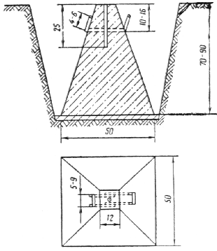
Рис. 1. Образец постоянного знака для закрепления базисных ходов на железнодорожных станциях
В верхнюю часть монолита закладывают металлический стержень (старую накладку), на котором кернением фиксируется центр знака.
Для облегчения установки монолитов следует использовать приспособление в виде двух скоб, разработанное УРиГГН ГУГК СССР.
Для закрепления точек базисных и магистральных ходов на железнодорожных станциях и перегонах грунтовыми знаками можно использовать рельсовые рубки, а стенными знаками - костыли (рис. 2).
Рис. 2. Образец закрепления точек базисного и магистрального ходов грунтовыми и стенными знаками:
а - рельсовые рубки; б - костыли; 1 - рельс; 2 - металлические штыри; 3 - щебень, песок; 4 - металлическая пластина; 5 - костыль
Рекомендуемое
|
Объект (титул) № 31 Партия № 1 СПРАВКА № 1
|
Рекомендуемое
|
Объект (титул) № 31 Партия № 1 СПРАВКА № 2
|
Рекомендуемое
Составил _________________ (дата и подпись) Проверил _________________ (дата и подпись) |
Рекомендуемое
Составил _________________ (дата и подпись) Проверил _________________ (дата и подпись) |
||||||||||||||||||||||||||||||||||||||||||||||||||||||||||||||||||||||||||||||||||||||||||||
Рекомендуемое
|
1. Дата проявления _______________________ 19__ г. Негативы с № 2480 по № 2641, всего 162 2. Условия проявления нормальные________________ 3. Проявитель Чибисова________ температура проявления 18 °С________ Продолжительность проявления 20 мин___________ Добавка в проявитель нет_______________________ 4. Условия фиксирования нормальные______________ применяемый фиксаж кислый____________________ Температура фиксажа 20 °С_____, продолжительность фиксирования 15 мин_______ Номер фиксирования в баке _____________________ 5. Промывка ____________________________________ Температура воды 18 °С_________________________ Время промывки 5 - 10 - 10 - 5__________________ мин Количество смен воды четыре___________________ Ванна с 0,25 %-ной соляной кислотой нет_________ Ванна с ____________ % глицерина нет___________ 6. Номера пробных негативов ______________ всего 15 _____________ 7. Длина проявленных концов 0,5 м________________ Качество аэронегативов хорошее_________________ Аэросъемка хорошая____________________________ Фотообработка хорошая_________________________ Общая оценка хорошо___________________________ Начальник фотолаборатории ____________________________ (дата и подпись) Примечание. Заключение инспектора ОТК. ___________________________________ (оценка, дата и подпись) |
Рекомендуемое
Составил _________________ (дата и подпись) Проверил _________________ (дата и подпись) |
||||||||||||||||||||||||||||||||||||||||||||||||||||||||||||||||||||||||||||||||||||||||||||||||
Рекомендуемое
|
Министерство гражданской авиации СССР Управление гражданской авиации ______________________________ авиаотряд _____________________ 19__ г. ________________________ Шифр объекта _________________ ПАСПОРТ АЭРОФОТОСЪЕМКИТрапеция _____________ площадь км2 масштаб ______________________ при Aср ______ (фактический) Основные данные аппаратуры и приборов 1. Тип и номер АФА: основной _______________ fк = _____________ мм дополнительный _______________ fк = _____________ мм 2. Статоскоп (тип и номер) __________________________________________ постоянные W = ____________________________________ V = _________________________________ 3. Радиовысотомер (тип и номер) ________________________________________________ 4. Гиростабилизация __________________________________________________________ 5. Аэропленка: тип _________________________ Изготовлена фабрикой ______________ __________________________________________ дата выпуска ______________________ 6.
Замечания по отдельным маршрутам __________________________________________ ____________________________________________________________________________ Материалы аэрофотосъемки соответствуют «Основным положениям» Начальник аэрофотосъемочной партии ______________________ (дата и подпись) Инженер технического контроля ______________________ (дата и подпись) |
||||||||||||||||||||||||||||||||||||
Рекомендуемое
|
«___» ______________ 19__ г. г. __________________________ обл. Мы, нижеподписавшиеся, начальник аэрофотосъемочной партии № _________________ авиаотряда _________________________________ управления ГА тов. _______________ с одной стороны, и представитель ___________________________ ____________________________________________________________________________ действующий на основании доверенности от ______________________________________ за № ____________, выданной __________________________________________________ с другой стороны, составили настоящий акт в том, что согласно § ________ договора от ____________ № _____________ первый сдал, а второй принял выполненные авиаотрядом № ______________ следующие летно-съемочные материалы по объектам _________________________________________________________________ 1. Аэронегативы основного залета, показания радиовысотомера и статоскопа. 2. Контактная печать в ____________ экз. 3. Репродукции накидного монтажа в _______ экз., в том числе 1 экз. с техническим паспортом залета. 4. Негативы репродукций накидного монтажа. 5. Журналы регистрации материалов аэрофотосъемки.
Всего ___________________ Всего выполнено на сумму _______________ руб. ______________ коп. Работы выполнены в соответствии с договором и «Основными положениями» Настоящий акт согласно § __________ договора является документом для оплаты работ заказчиком и составлен в ___________ экз. Сдал начальник аэрофотосъемочной партии № _________________________________ авиаотряда _________________________ управления ГА ___________________________ (дата и подпись) Принял ____________________________ (дата и подпись) |
Рекомендуемое
|
Утверждаю. Согласен ___________________ Начальник экспедиции Технический руководитель ___________________ «___» ______________ 19__ г. (дата и подпись) АКТ
|
Рекомендуемое
Составил _________________ (дата и подпись) Проверил _________________ (дата и подпись) |
Рекомендуемое
|
___________________________ ________________________________ (число, месяц, год) (наименование органа) АКТ
|
Рекомендуемое
|
для _________________________________________________________________________ (стадия проектирования) ____________________________________________________________________________ (наименование объекта) Год выполнения изысканий 198_______ Договор № ________________________ Задание (программа) на производство изысканий выдано ___________________________ (кем) ____________________________________________________________________________ Разрешение на производство работ получено от ___________________________________ 1. Объем выполненных работ
2. Перечень предъявляемых материалов __________________________________________ ____________________________________________________________________________ ____________________________________________________________________________ 3. Анализ полевых и камеральных материалов Метод создания плановой геодезической сети _____________________________________ ____________________________________________________________________________ Угловые измерения произведены _______________________________________________ (приборы, количество приемов) ____________________________________________________________________________ Линейные измерения выполнены _______________________________________________ ____________________________________________________________________________ Характеристика плановой геодезической сети
Метод создания высотной геодезической сети _____________________________________ ____________________________________________________________________________ Нивелирование произведено ___________________________________________________ (приборы) Характеристика высотной геодезической сети
Закрепление точек планово-высотной геодезической сети ___________________________ ______________________________________________ штырями, кольями, реперами и т.д. Способы уравнивания планово-высотной геодезической сети ________________________ ____________________________________________________________________________ (метод узлов, метод последовательных приближений и т.д.) Метод топографической съемки ________________________________________________ (тахеометрический, горизонтальный и т.д.) ____________________________________________________________________________ Масштаб, высота сечения рельефа _______________________________________________ Качество оформления полевых документов _______________________________________ ____________________________________________________________________________ Качество оформления камеральных материалов ___________________________________ ____________________________________________________________________________ 4. Общая оценка работ ________________________________________________________ 5. Заключение ________________________________________________________________ (возможность использования материалов ____________________________________________________________________________ для проектирования, замечания и предложения) ____________________________________________________________________________ ____________________________________________________________________________ ____________________________________________________________________________ Материалы проверены и приняты комиссией в составе: _____________________________ ____________________________________________________________________________ ____________________________________________________________________________ ____________________________________________________________________________ с оценкой ______________________ Главный специалист отдела Главный инженер проекта Начальник экспедиции Начальник партии Руководитель группы С актом ознакомлены: _________________________________________________________ ____________________________________________________________________________ ____________________________________________________________________________ При рассмотрении техническим отделом дана оценка: ______________________________ ____________________________________________________________________________ ____________________________________________________________________________ ____________________________________________________________________________ Начальник технического отдела ___________________________________________ Главный специалист ___________________________________________ |
||||||||||||||||||||||||||||||||||||||||||||||||||
Рекомендуемое
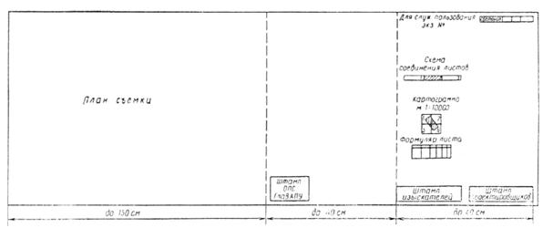
Примечания: 1. Штамп института ставится на оригинале.
2. Штамп ОПС ГлавАПУ ставится на диазопленке.
3. Общая длина листа плана не должна превышать 2,5 м.
Рекомендуемое
В пределах полосы отвода на планах должны быть показаны следующие сооружения и устройства.
Устройства службы пути:
пути и парки с нумерацией;
стрелочные переводы с нумерацией;
путевые устройства: упоры, заградительные брусья, изолированные стыки, ограничивающие полезную длину путей;
сбрасывающие стрелки, башмакосбрасыватели;
сигнальные и километровые знаки (с привязкой их к пикетажу);
водоотводные сооружения: лотки, канавы, кюветы (с указанием отметок дна в местах перелома профиля);
скрытые сооружения земляного полотна: дренажи, ливневая канализация и т.д. (с отметками и привязкой к пикетажу);
искусственные сооружения: мосты, трубы, путепроводы, пешеходные мосты; тоннельные переходы, подпорные стенки (с привязкой этих сооружений к пикетажу и указанием величины отверстий искусственных сооружений габаритов, отметок головки рельсов);
лесопосадки живой защиты, снего- и пескозащитные сооружения;
служебно-технические, жилые и прочие здания в пределах полосы отвода, воздухопроводы, пневмопочта;
переезды и подходы к ним;
геодезические марки и реперы, знаки съемочного обоснования.
Пассажирские устройства:
пассажирские здания и подъезды к ним;
пассажирские платформы;
багажные здания, туалеты, кипятильники, стационарные ларьки;
переходы для пассажиров и другие пассажирские устройства.
Грузовые устройства:
крытые грузовые склады;
площадки для контейнерных, навалочных, лесных и тяжеловесных грузов;
погрузочно-выгрузочные платформы и площадки;
погрузочные эстакады;
загоны для живности и коновязи;
пункты льдохранения;
вагонные весы, габаритные ворота;
грузовые конторы и помещения для грузчиков;
другие грузовые устройства.
Устройства локомотивного хозяйства:
здания депо;
устройства для снабжения локомотивов топливом, водой, песком, смазкой, обтирочными материалами;
устройства для очистки топки и дымовых коробок, для уборки шлака и изгари;
устройства для обмывки паровозов, продувки котлов и труб;
смотровые канавы, поворотные устройства и другие устройства локомотивного хозяйства.
Устройства энергоснабжения:
тяговые подстанции;
опоры контактной сети;
кабели зарядки вагонов;
электрифицированные пути.
Устройства вагонного хозяйства:
здания вагонного депо;
вагонные колесные мастерские;
ремонтные пункты на путях сортировочных парков;
пункты технического осмотра;
контрольные пункты автотормозов, компрессорные и воздухоразводящие сети с колонками;
промывочно-пропарочные станции, пункты очистки вагонов и других устройства вагонного хозяйства.
Устройства водоснабжения:
водоемные здания, подземные резервуары;
напорная водоразводящая канализационная и водосточная сети;
гидроколонки, пожарные и водоразборные краны (с привязкой к пикетажу).
Устройства сигнализации, централизации, блокировки и связи:
посты электрической, механической и ключевой централизации стрелок;
горки, вагонозамедлители, компрессорные установки;
светофоры, семафоры, диски (с привязкой к пикетажу);
подземные, кабельные и проводные линии связи: централизации и блокировки, опоры воздушных линий;
телефонно-телеграфные станции, радиоузлы и другие устройства СЦБ и связи (наличие на станции громкоговорящей оповестительной сети указывается на чертеже).
Устройства электроосвещения:
опоры линий электропередачи;
трансформаторные киоски;
осветительные столбы, прожекторные мачты и другие устройства.
Прочие устройства:
нефтяные баки, масло-, нефтепроводящая сеть, нефтеразборочные колонки;
склады и здания различных организаций;
заборы и ворота;
арендные участки и прочие устройства;
сторонние коммуникации, пересекающие земляное полотно.
Рекомендуемое
|
№ точки или пикета |
Местоположение точки |
Координаты |
Примечание |
|
|
±X |
±Y |
|||
|
35 |
Слева от оси II главного пути на расстоянии 2,30 м |
+15,34 |
+205,11 |
|
Рекомендуемое
|
Номер парка |
Номер пути |
Длина пути |
Тип рельс |
Границы пути |
|||
|
полная |
полезная |
от стрелки |
через стрелки |
до стрелки |
|||
Примечания. 1. Настоящую ведомость составляют в виде отдельного приложения только при съемке больших станций и узлов. При съемке малых станций ведомость помещают на чертеже.
2. Наименования парков записываются в ведомость.
Рекомендуемое
|
Километр |
Пикет и плюс |
Расстояние от оси главного пути до репера, м |
№ репера или марки |
Абсолютная отметка |
Краткое описание репера |
Эскиз |
|
|
влево |
вправо |
||||||
Рекомендуемое
|
Номер стрелки перевода |
Вид перевода |
Вид балласта |
Способ управления |
Тип рельса |
Марка крестовин |
Координаты |
Примечание |
|
|
X |
Y |
|||||||
Рекомендуемое
|
№ пп |
Наименование пути или сооружения |
№ вершины |
№ точки сооружения |
Координаты |
Примечание |
|
|
X |
Y |
|||||
|
1 |
1-й главный путь |
4 |
+5,50 |
-110,70 |
||
|
2 |
Угол депо |
10 |
+8,80 |
+50,44 |
||
Рекомендуемое
|
Наименование устройств и сооружений |
Координаты |
Примечание |
|
|
±X |
±Y |
||
|
Угол опоры |
-10,21 |
+13,70 |
|
Примечание. Настоящую ведомость составляют только при съемке больших станций и узлов. В нее вносят отдельные сооружения и устройства, расположенные в непосредственной близости от путей (за исключением зданий и стрелочных переводов, координаты которых вписывают в отдельные ведомости).
Рекомендуемое
|
Номера строений |
Наименование |
Этажность, материал стен |
Кровля |
Состояние |
Площадь по наружному обмеру, м2 |
Примечание. Настоящую ведомость составляют в виде отдельного приложения только при съемке больших станций и узлов. При съемке малых станций помещают на чертеже.
Рекомендуемое
|
1. План составлен по материалам съемки, произведенной изыскательской партией отдела ________________ в период ______________ 19__ г. 2. План составлен в ________________ координатах. За ось Y принята линия теодолитного (базисного) хода, проложенного между ________________________ путями; за ось Х принята ось ________________ здания. 3. Базисные ходы закреплены на местности ___________________, а съемочные ходы _________________. 4. Пикетаж разбит от оси ___________________ здания ПК _________ ± ______________ согласно продольному профилю линии __________________ 199__ г. 5. Высотные отметки - абсолютные (относительные). За исходную принята отметка __________ марки (репера) № _________, находящейся _____________________. Нивелировка увязана с отметкой ___________________ марки ___________________ № ______________, находящейся _____________________. 6. Подземные сети нанесены на план по снятым в натуре наружным элементам и _______________________. 7. Полоса отвода нанесена на план по ________________________________________. |
Рекомендуемое
1. Общие сведения - цель и наименование объекта изысканий; документы, на основании которых выполнялись изыскания; кем выдано разрешение на право производства работ; сроки выполнения работ (по плану, фактически); состав исполнителей; общие трудозатраты; объемы выполненных работ (в физическом выражении); договорная цена; перечень нормативных документов, в соответствии с которыми выполнены инженерно-геодезические изыскания.
2. Краткая физико-географическая характеристика района изысканий - местонахождение объекта изысканий; категория сложности работ; продолжительность полевого периода и продолжительность неблагоприятного для производства работ периода.
3. Топографо-геодезическая изученность района изыскании - наличие топографических карт и планов, а также опорных геодезических сетей; использование материалов аэро- и космофото- и топографических съемок прошлых лет.
4. Системы координат, съемочные геодезические сети - принятие системы координат и высот; схемы плановой и высотной съемочных геодезических сетей; характеристики опорных пунктов и реперов; технические характеристики ходов съемочного обоснования (длина хода, число углов, невязки); методы измерений линий, углов, превышений, а также использованные геодезические приборы; способы уравнивания планового и высотного съемочного обоснования; оценки точности ходов съемочной геодезической сети; закрепление пунктов (точек) планового съемочного обоснования; местоположение заложенных реперов; метрологическое обеспечение средств геодезических измерений.
5. Топографические съемки и специальные работы.
5.1. Топографические съемки по трассе новой железной и автомобильной дороги - ширина полосы или границы, масштаб, сечение рельефа и способ съемки по трассе новой дороги, а также площадок под раздельные пункты, искусственные сооружения, карьеры и т.п.; съемка поперечных профилей; характеристика основы, на которой составлены инженерно-топографические планы, количество планшетов.
5.2. Съемка существующих железных дорог - схема разбивки пикетажа; съемка плана и профиля железнодорожного пути и расчет кривых; съемка поперечных профилей; топографические съемки площадок искусственных и других проектируемых сооружений, карьеров, переездов; съемка подземных и надземных коммуникаций, пересекаемых железной дорогой.
5.3. Съемка железнодорожных станций - способы съемки путевого развития и пристанционной территории; схема разбивки пикетажа, съемка поперечных профилей; съемка подземных и надземных коммуникаций; съемка искусственных сооружений, переездов, габаритных расстояний, сортировочных горок; масштабы составляемых планов; перечень и площади снятых станций.
5.4. Аэрофототопографическая съемка - воздушное фотографирование; фотолабораторные и фотограмметрические работы, оценка качества залетов; камеральные фотограмметрические и стереотопографические работы (фототриангуляция, составление инженерно-топографических планов, фотограмметрическая съемка поперечников, кривых и других элементов станционной ситуации).
5.5. Полевой контроль топографо-геодезических работ и его результаты.
5.6. Геодезические работы для обеспечения инженерно-геологических и инженерно-гидрометеорологических изысканий.
6. Контора, общежитие, автотранспорт, техника безопасности.
7. Автоматизация работ - автоматизация полевых и камеральных работ; используемое техническое и программное обеспечение.
8. Технический контроль и приемка работ.
9. Перечень материалов, передаваемых в бюро технической информации (архив), заказчику и органам, выдавшим разрешение на производство работ.
10. Заключение.
СОДЕРЖАНИЕ